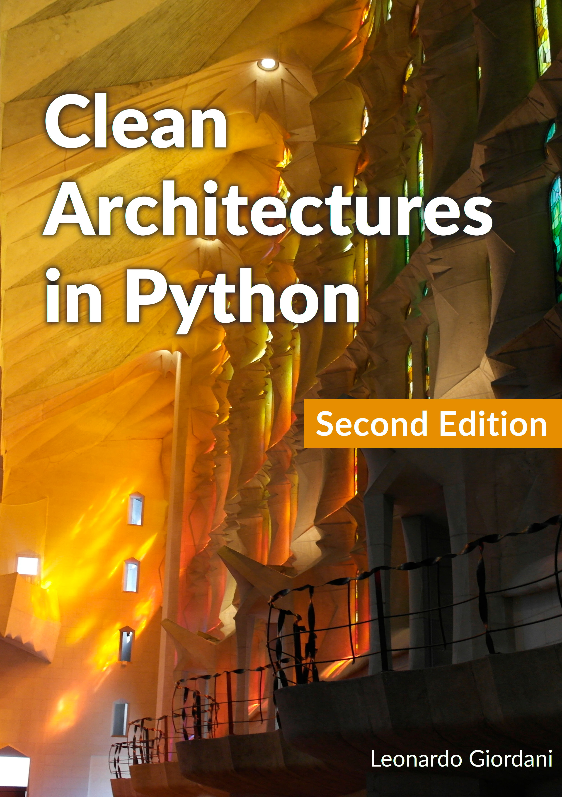
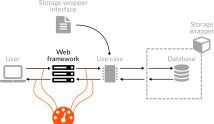
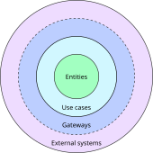
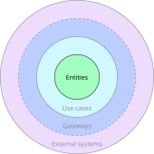
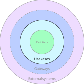
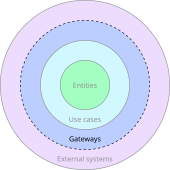
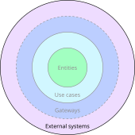
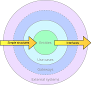

Dedication
To my father, who taught me to be attentive, curious, and passionate. He succeeded.
To my mother, who taught me to be smart, cautious, and careful. She didn’t succeed
Introduction
Learn about the Force, Luke.
This book is about a software design methodology. A methodology is a set of guidelines that help you to reach your goal effectively, thus saving time, implementing far-sighted solutions, and avoiding the need to reinvent the wheel time and again.
As other professionals around the world face problems and try to solve them, some of them, having discovered a good way to solve a problem, decide to share their experience, usually in the form of a "best practices" post on a blog, or talk at a conference. We also speak of patterns_[1], which are formalised best practices, and _anti-patterns, when it comes to advice about what not to do and why it is better to avoid a certain solution.
Often, when best practices encompass a wide scope, they are designated a methodology. The definition of a methodology is to convey a method, more than a specific solution to a problem. The very nature of methodologies means they are not connected to any specific case, in favour of a wider and more generic approach to the subject matter. This also means that applying methodologies without thinking shows that one didn’t grasp the nature of a methodology, which is to help to find a solution and not to provide it.
This is why the main advice I have to give is: be reasonable; try to understand why a methodology leads to a solution and adopt it if it fits your need. I’m saying this at the very beginning of this book because this is how I’d like you to approach this work of mine.
The clean architecture, for example, pushes abstraction to its limits. One of the main concepts is that you should isolate parts of your system as much as possible, so you can replace them without affecting the rest. This requires a lot of abstraction layers, which might affect the performances of the system, and which definitely require a greater initial development effort. You might consider these shortcomings unacceptable, or perhaps be forced to sacrifice cleanness in favour of execution speed, as you cannot afford to waste resources.
In these cases, break the rules.
With methodologies you are always free to keep the parts you consider useful and discard the rest, and if you have understood the reason behind the methodology, you will also be aware of the reasons that support your decisions. My advice is to keep track of such reasons, either in design documents or simply in code comments, as a future reference for you or for any other programmer who might be surprised by a "wrong" solution and be tempted to fix it.
I will try as much as possible to give reasons for the proposed solutions, so you can judge whether those reasons are valid in your case. In general let’s say this book contains possible contributions to your job, it’s not an attempt to dictate THE best way to work.
Spoiler alert: there is no such a thing.
What is a software architecture?
Every production system, be it a software package, a mechanical device, or a simple procedure, is made of components and connections between them. The purpose of the connections is to use the output of some components as inputs of other components, in order to perform a certain action or set of actions.
In a process, the architecture specifies which components are part of an implementation and how they are interconnected.
A simple example is the process of writing a document. The process, in this case, is the conversion of a set of ideas and sentences into a written text, and it can have multiple implementations. A very simple one is when someone writes with a pen on a sheet of paper, but it might become more complex if we add someone who is writing what another person dictates, multiple proof readers who can send back the text with corrections, and a designer who curates the visual rendering of the text. In all these cases the process is the same, and the nature of inputs (ideas, sentences) and outputs (a document or a book) doesn’t change. The different architecture, however, can greatly affect the quality of the output, or the speed with which it is produced.
An architecture can have multiple granularities, which are the "zoom level" we use to look at the components and their connections. The first level is the one that describes the whole process as a black box with inputs and outputs. At this level we are not even concerned with components, we don’t know what’s inside the system and how it works. We only know what it does.
As you zoom in, you start discovering the details of the architecture, that is which components are in the aforementioned black box and how they are connected. These components are in turn black boxes, and you don’t want to know specifically how they work, but you want to know what their inputs and outputs are, where the inputs come from, and how the outputs are used by other components.
This process is virtually unlimited, so there is never one single architecture that describes a complete system, but rather a set of architectures, each one covering the granularity we are interested in.
Let me go over another simple example that has nothing to do with software. Let’s consider a shop as a system and let’s discuss its architecture.
A shop, as a black box, is a place where people enter with money and exit with items (if they found what they were looking for). The input of the system are people and their money, and the outputs are the same people and items. The shop itself needs to buy what it sells first, so another input is represented by the stock the shop buys from the wholesaler and another output by the money it pays for it. At this level the internal structure of the shop is unknown, we don’t even know what it sells. We can however already devise a simple performance analysis, for example comparing the amount of money that goes out (to pay the wholesaler) and the amount of money that comes in (from the customers). If the former is higher than the latter the business is not profitable.
Even in the case of a shop that has positive results we might want to increase its performances, and to do this chances are that we need to understand its internal structure and what we can change to increase its productivity. This may reveal, for example, that the shop has too many workers, who are underemployed waiting for clients because we overestimated the size of the business. Or it might show that the time taken to serve clients is too long and many clients walk away without buying anything. Or maybe there are not enough shelves to display goods and the staff carries stock around all day searching for display space so the shop is in chaos and clients cannot find what they need.
At this level, however, workers are pure entities, and still we don’t know much about the shop. To better understand the reasons behind a problem we might need to increase the zoom level and look at the workers for what they are, human beings, and start understanding what their needs are and how to help them to work better.
This example can easily be translated into the software realm. Our shop is a processing unit in the cloud, for example, input and output being the money we pay and the amount of requests the system serves per second, which is probably connected with the income of the business. The internal processes are revealed by a deeper analysis of the resources we allocate (storage, processors, memory), which breaks the abstraction of the "processing unit" and reveals details like the hardware architecture or the operating system. We might go deeper, discussing the framework or the library we used to implement a certain service, the programming language we used, or the specific hardware on which the whole system runs.
Remember that an architecture tries to detail how a process is implemented at a certain granularity, given certain assumptions or requirements. The quality of an architecture can then be judged on the basis of parameters such as its cost, the quality of the outputs, its simplicity or "elegance", the amount of effort required to change it, and so on.
Why is it called "clean"?
The architecture explained in this book has many names, but the one that is mainly in use nowadays is "clean architecture". This is the name used by Robert Martin in his seminal post where he clearly states this structure is not a novelty, but has been promoted by many software designers over the years. I believe the adjective "clean" describes one of the fundamental aspects of both the software structure and the development approach of this architecture. It is clean, that is, it is easy to understand what happens.
The clean architecture is the opposite of spaghetti code, where everything is interlaced and there are no single elements that can be easily detached from the rest and replaced without the whole system collapsing. The main point of the clean architecture is to make clear "what is where and why", and this should be your first concern while you design and implement a software system, whatever architecture or development methodology you want to follow.
The clean architecture is not the perfect architecture and cannot be applied unthinkingly. Like any other solution, it addresses a set of problems and tries to solve them, but there is no panacea that will solve all issues. As already stated, it’s better to understand how the clean architecture solves some problems and decide if the solution suits your need.
Why "architectures"?
While I was writing the first edition of the book it became clear to me that the goal of this book is to begin a journey and not to define the specific steps through which each software designer has to go through. The concepts explained here are rooted in some design principles that are much more important than the resulting physical structure of the system that you will create.
This is why I wanted to stress that what I show in this book can (and hopefully will) be an inspiration for many different architectures that you will create to solve the problems you will have to face.
Or maybe I just wanted to avoid looking like a clone of Robert Martin.
Why Python?
I have been working with Python for 20 years, along with other languages, but I came to love its simplicity and power and so I ended up using it on many projects. When I was first introduced to the clean architecture I was working on a Python application that was meant to glue together the steps of a processing chain for satellite imagery, so my journey with the concepts I will explain started with this language.
I will therefore speak of Python in this book, but the main concepts are valid for any other language, especially object-oriented ones. I will not introduce Python here, so a minimal knowledge of the language syntax is needed to understand the examples and the project I will discuss.
The clean architecture concepts are independent of the language, but the implementation obviously leverages what a specific language allows you to do, so this book is about the clean architecture and an implementation of it that I devised using Python. I really look forward to seeing more books about the clean architecture that explore other implementations in Python and in other languages.
Acknowledgments
-
Eleanor de Veras, who proofread the introduction.
-
Roberto Ciatti, who introduced me to clean architectures.
-
Eric Smith, Faust Gertz, Giovanni Natale, Grant Moore, Hans Chen, Max H. Gerlach, Michael O’Neill, Paul Schwendenman, Ramces Chirino, Rodrigo Monte, Simon Weiss, and Thiago C. D’Ávila who fixed bugs, typos and bad grammar submitting issues and pull requests.
-
Łukasz Dziedzic, who developed the free "Lato" font (http://www.latofonts.com), used for the cover.
The cover photograph is by pxhere. A detail of the Sagrada Familia in Barcelona, one of the world’s best contemporary artworks, a bright example of architecture in which every single element has a meaning and a purpose. Praise to Antoni Gaudí, brilliant architect and saint, who will always inspire me with his works and his life.
About the book
We’ll put the band back together, do a few gigs, we get some bread. Bang! Five thousand bucks.
In 2015 I was introduced to the clean architecture by a colleague of mine, Roberto Ciatti. I started working with him following a strict Test-Driven Development (TDD) approach and learning or better understanding many things I now consider pillars of my programming knowledge.
Unfortunately the project was cancelled, but the clean architecture concepts stuck with me, so I revisited them for a simple open source project I started working on at the time[2]. Meanwhile I read "Object Oriented Software Engineering: A Use-Case Driven Approach" by Ivar Jacobson[3].
In 2013 I started writing a personal blog, The Digital Cat, and after having published many Python-related posts I began working on a post to show other programmers the beauty of the clean architecture concepts: "Clean Architectures in Python: a step by step example", published in 2016, which was well received by the Python community. For a couple of years I considered expanding the post, but I couldn’t find the time to do it, and in the meanwhile I realised that many things I had written needed to be corrected, clarified, or simply updated. So I thought that a book could be the best way to present the whole picture effectively, and here we are.
In 2020, after having delayed it for a long time, I decided to review the whole book, updating it and clarifying parts that weren’t particularly well written. I also decided to remove the part on TDD. While I believe every programmer should understand TDD, the topic of the book is different, so I updated the material and published it on my blog.
This book is the product of many hours spent thinking, experimenting, studying, and making mistakes. I couldn’t have written it without the help of many people, some of whose names I don’t know, who provided free documentation, free software, free help. Thanks everybody! I also want to specifically say thanks to many readers who came back to me with suggestions, corrections, or simply with appreciation messages. Thanks all!
Prerequisites and structure of the book
To fully appreciate the book you need to know Python and be familiar with TDD, in particular with unit testing and mocks. Please refer to the series TDD in Python with pytest published on my blog if you need to refresh your knowledge about these topics.
After the two introductory parts that you are reading, chapter 1 goes through a 10,000 feet overview of a system designed with a clean architecture, while chapter 2 briefly discusses the components and the ideas behind this software architecture. Chapter 3 runs through a concrete example of clean architecture and chapter 4 expands the example adding a web application on top of it. Chapter 5 discusses error management and improvements to the Python code developed in the previous chapters. Chapters 6 and 7 show how to plug different database systems to the web service created previously, and chapter 8 wraps up the example showing how to run the application with a production-ready configuration.
Typographic conventions
This book uses Python, so the majority of the code samples will be in this language, either inline or in a specific code block like this
def example():
print("This is a code block")Note that the path of the file that contains the code is printed just before the source code. Code blocks don’t include line numbers, as the part of code that are being discussed are usually repeated in the text. This also makes it possible to copy the code from the PDF directly.
Shell commands are presented with a generic prompt $
$ command --option1 value1 --option2 value 2which means that you will copy and execute the string starting from command.
I will also use two different asides to link the code repository and to mark important principles.
This box provides a link to the commit or the tag that contains the code that was presented
This box highlights a concept explained in detail in the current chapter
|
Concept
This recaps an important concept that is explained in the text. |
Why this book comes for free
The first reason I started writing a technical blog was to share with others my discoveries, and to save them the hassle of going through processes I had already cracked. Moreover, I always enjoy the fact that explaining something forces me to better understand that topic, and writing requires even more study to get things clear in my mind, before attempting to introduce other people to the subject.
Much of what I know comes from personal investigations, but without the work of people who shared their knowledge for free I would not have been able to make much progress. The Free Software Movement didn’t start with Internet, and I got a taste of it during the 80s and 90s, but the World Wide Web undeniably gave an impressive boost to the speed and quality of this knowledge sharing.
So this book is a way to say thanks to everybody gave their time to write blog posts, free books, software, and to organise conferences, groups, meetups. This is why I teach people at conferences, this is why I write a technical blog, this is the reason behind this book.
That said, if you want to acknowledge my effort with money, feel free. Anyone who publishes a book or travels to conferences incurs expenses, and any help is welcome. However, the best thing you can do is to become part of this process of shared knowledge; experiment, learn and share what you learn.
Submitting issues or patches
This book is not a collaborative effort. It is the product of my work, and it expresses my personal view on some topics, and also follows my way of teaching. Both however can be improved, and they might also be wrong, so I am open to suggestions, and I will gladly receive any report about mistakes or any request for clarifications. Feel free to use the GitHub Issues of the book repository or of the projects presented in the book. I will answer or fix issues as soon as possible, and if needed I will publish a new version of the book with the correction. Thanks!
About the author
My name is Leonardo Giordani, I was born in 1977, a year that gave to the world Star Wars, bash, Apple II, BSD, Dire Straits, The Silmarillion, among many other things. I’m interested in operating systems and computer languages, photography, fantasy and science fiction, video and board games, guitar playing, and (too) many other things.
I studied and used several programming languages, among them my favourite are the Motorola 68k Assembly, C, and Python. I love mathematics and cryptography. I’m mainly interested in open source software, and I like both the theoretical and practical aspects of computer science.
For 13 years I have been a C/Python programmer and devops for a satellite imagery company. and I am currently one of the lead developers at WeGotPOP, a UK company based in London and New York that creates innovative software for film productions.
In 2013 I started publishing some technical thoughts on my blog, The Digital Cat, and in 2018 I published the first version of the book you are currently reading.
Changes in the second edition
New edition, new typos! I’m pretty sure this is the major change I introduced with this edition.
Jokes aside, this second edition contains many changes, but the core example is the same, and while the code changed a little (I use dataclasses and introduced a management script to orchestrate tests) nothing revolutionary happened from that point of view.
So, if you already read the first edition, you might want to have a look at chapters 6, 7, and 8, where I reworked the way I manage integration tests and the production-ready setup of the project. If you haven’t read the first edition I hope you will appreciate the effort I made to introduce the clean architecture with a narrated example in chapter 1, before I start discussing the architecture in more detail and show you some code.
The biggest change that readers of the first edition might notice in the content is that I removed the part on TDD and focused only on the clean architecture. What I wrote on TDD has become a series of 5 posts on my blog, that I reference in the book, but this time I preferred to stay faithful to the title and discuss only the subject matter. This probably means that the book is not suitable for complete beginners any more, but since the resources are out there I don’t feel too guilty.
I also experimented with different toolchains. The first edition was created directly with Leanpub’s Markua language, which gave me all I needed to start. While working on the second edition, though, I grew progressively unsatisfied because of the lack of features like tips and file names for the source snippets, and a general lack of configuration options. I think Leanpub is doing a great job, but Markua simply isn’t good enough for me any more. So I tried Pandoc, and I immediately hit the wall of Latex, which is obscure black magic to say the least. I spent a great amount of time hacking templates and Python filters to get more or less what I wanted, but I wasn’t happy. Finally, I landed where I am at the moment, using AsciiDoc with Asciidoctor, which is extremely good, and so far provided all I need out of the box. Since the output of AsciiDoc is an amazing website, this book is mainly published in HTML.
I hope you will enjoy the effort I put into this new edition!
1. A day in the life of a clean system
Must be my lucky day.
In this chapter I will introduce the reader to a (very simple) system designed with a clean architecture. The purpose of this introductory chapter is to familiarise with main concepts like separation of concerns and inversion of control, which are paramount in system design. While I describe how data flows in the system, I will purposefully omit details, so that we can focus on the global idea and not worry too much about the implementation. This example will be then explored in all its glorious details in the following chapters, so there will be time to discuss specific choices. For now, try to get the big picture.
1.1. The data flow
In the rest of the book, we will design together part of a simple web application that provides a room renting system. So, let’s consider that our "Rent-o-Matic" application[4] is running at https://www.rentomatic.com, and that a user wants to see the available rooms. They open the browser and type the address, then clicking on menus and buttons they reach the page with the list of all the rooms that our company rents.
Let’s assume that this URL is /rooms?status=available. When the user’s browser accesses that URL, an HTTP request reaches our system, where there is a component that is waiting for HTTP connections. Let’s call this component "web framework"[5]
The purpose of the web framework is to understand the HTTP request and to retrieve the data that we need to provide a response. In this simple case there are two important parts of the request, namely the endpoint itself (/rooms), and a single query string parameter, status=available. Endpoints are like commands for our system, so when a user accesses one of them, they signal to the system that a specific service has been requested, which in this case is the list of all the rooms that are available for rent.
The domain in which the web framework operates is that of the HTTP protocol, so when the web framework has decoded the request it should pass the relevant information to another component that will process it. This other component is called use case, and it is the crucial and most important component of the whole clean system as it implements the business logic.
The business logic is an important concept in system design. You are creating a system because you have some knowledge that you think might be useful to the world, or at the very least marketable. This knowledge is, at the end of the day, a way to process data, a way to extract or present data that maybe others don’t have. A search engine can find all the web pages that are related to the terms in a query, a social network shows you the posts of people you follow and sorts them according to a specific algorithm, a travel company finds the best options for your journey between two locations, and so on. All these are good examples of business logic.
|
Business logic
Business logic is the specific algorithm or process that you want to implement, the way you transform data to provide a service. It is the most important part of the system. |
The use case implements a very specific part of the whole business logic. In this case we have a use case to search for rooms with a given value of the parameter status. This means that the use case has to extract all the rooms that are managed by our company and filter them to show only the ones that are available.
Why can’t the web framework do it? Well, the main purpose of a good system architecture is to separate concerns, that is to keep different responsibilities and domains separated. The web framework is there to process the HTTP protocol, and is maintained by programmers that are concerned with that specific part of the system, and adding the business logic to it mixes two very different fields.
|
Separation of concerns
Different parts a system should manage different parts of the process. Whenever two separate parts of a system work on the same data or the same part of a process they are coupled. While coupling is unavoidable, the higher the coupling between two components the harder is to change one without affecting the other. |
As we will see, separating layers allows us to maintain the system with less effort, making single parts of it more testable and easily replaceable.
In the example that we are discussing here, the use case needs to fetch all the rooms that are in an available state, extracting them from a source of data. This is the business logic, and in this case it is very straightforward, as it will probably consist of a simple filtering on the value of an attribute. This might however not be the case. An example of a more advanced business logic might be an ordering based on a recommendation system, which might require the use case to connect with more components than just the data source.
So, the information that the use case wants to process is stored somewhere. Let’s call this component storage system. Many of you probably already pictured a database in your mind, maybe a relational one, but that is just one of the possible data sources. The abstraction represented by the storage system is: anything that the use case can access and that can provide data is a source. It might be a file, a database (either relational or not), a network endpoint, or a remote sensor.
|
Abstraction
When designing a system, it is paramount to think in terms of abstractions, or building blocks. A component has a role in the system, regardless of the specific implementation of that component. The higher the level of the abstraction, the less detailed are the components. Clearly, high-level abstractions don’t consider practical problems, which is why the abstract design has to be then implemented using specific solutions or technologies. |
For simplicity’s sake, let’s use a relational database like Postgres in this example, as it is likely to be familiar to the majority of readers, but keep in mind the more generic case.
How does the use case connect with the storage system? Clearly, if we hard code into the use case the calls to a specific system (e.g. using SQL) the two components will be strongly coupled, which is something we try to avoid in system design. Coupled components are not independent, they are tightly connected, and changes occurring in one of the two force changes in the second one (and vice versa). This also means that testing components is more difficult, as one component cannot live without the other, and when the second component is a complex system like a database this can severely slow down development.
For example, let’s assume the use case called directly a specific Python library to access PostgreSQL such as psycopg. This would couple the use case with that specific source, and a change of database would result in a change of its code. This is far from being ideal, as the use case contains the business logic, which has not changed moving from one database system to the other. Parts of the system that do not contain the business logic should be treated like implementation details.
|
Implementation detail
A specific solution or technology is called a detail when it is not central to the design as a whole. The word doesn’t refer to the inherent complexity of the subject, which might be greater than that of more central parts. |
A relational database is hundred of times richer and more complex than an HTTP endpoint, and this in turn is more complex than ordering a list of objects, but the core of the application is the use case, not the way we store data or the way we provide access to that. Usually, implementation details are mostly connected with performances or usability, while the core parts implement the pure business logic.
How can we avoid strong coupling? A simple solution is called inversion of control, and I will briefly sketch it here, and show a proper implementation in a later section of the book, when we will implement this very example.
Inversion of control happens in two phases. First, the called object (the database in this case) is wrapped with a standard interface. This is a set of functionalities shared by every implementation of the target, and each interface translates the functionalities to calls to the specific language[^language] of the wrapped implementation.
|
Inversion of control
A technique used to avoid strong coupling between components of a system, that involves wrapping them so that they expose a certain interface. A component expecting that interface can then connect to them without knowing the details of the specific implementation, and thus being strongly coupled to the interface instead of the specific implementation. |
A real world example of this is that of power plugs: electric appliances are designed to be connected not with specific power plugs, but to any power plug that is build according to the specification (size, number of poles, etc). When you buy a TV in the UK, you expect it to come with a UK plug (BS 1363). If it doesn’t, you need an adapter that allows you to plug electronic devices into sockets of a foreign nation. In this case, we need to connect the use case (TV) to a database (power system) that have not been designed to match a common interface.
[^language]: The word language, here, is meant in its broader sense. It might be a programming language, but also an API, a data format, or a protocol.
In the example we are discussing, the use case needs to extract all rooms with a given status, so the database wrapper needs to provide a single entry point that we might call list_rooms_with_status.
In the second phase of inversion of control the caller (the use case) is modified to avoid hard coding the call to the specific implementation, as this would again couple the two. The use case accepts an incoming object as a parameter of its constructor, and receives a concrete instance of the adapter at creation time. The specific technique used to implement this depends greatly on the programming language we use. Python doesn’t have an explicit syntax for interfaces, so we will just assume the object we pass implements a the required methods.
Now the use case is connected with the adapter and knows the interface, and it can call the entry point list_rooms_with_status passing the status available. The adapter knows the details of the storage system, so it converts the method call and the parameter in a specific call (or set of calls) that extract the requested data, and then converts them in the format expected by the use case. For example, it might return a Python list of dictionaries that represent rooms.
At this point, the use case has to apply the rest of the business logic, if needed, and return the result to the web framework.
The web framework converts the data received from the use case into an HTTP response. In this case, as we are considering an endpoint that is supposed to be reached explicitly by the user of the website, the web framework will return an HTML page in the body of the response, but if this was an internal endpoint, for example called by some asynchronous JavaScript code in the front-end, the body of the response would probably just be a JSON structure.
1.2. Advantages of a layered architecture
As you can see, the stages of this process are clearly separated, and there is a great deal of data transformation between them. Using common data formats is one of the way we achieve independence, or loose coupling, between components of a computer system.
To better understand what loose coupling means for a programmer, let’s consider the last picture. In the previous paragraphs I gave an example of a system that uses a web framework for the user interface and a relational database for the data source, but what would change if the front-end part was a command-line interface? And what would change if, instead of a relational database, there was another type of data source, for example a set of text files?
As you can see, both changes would require the replacement of some components. Aafter all, we need different code to manage a command line instead of a web page. But the external shape of the system doesn’t change, neither does the way data flows. We created a system in which the user interface (web framework, command-line interface) and the data source (relational database, text files) are details of the implementation, and not core parts of it.
The main immediate advantage of a layered architecture, however, is testability. When you clearly separate components you clearly establish the data each of them has to receive and produce, so you can ideally disconnect a single component and test it in isolation. Let’s take the Web framework component that we added and consider it for a moment forgetting the rest of the architecture. We can ideally connect a tester to its inputs and outputs as you can see in the figure

We know that the Web framework receives an HTTP request (1) with a specific target and a specific query string, and that it has to call (2) a method on the use case passing specific parameters. When the use case returns data (3), the Web framework has to convert that into an HTTP response (4). Since this is a test we can have a fake use case, that is an object that just mimics what the use case does without really implementing the business logic. We will then test that the Web framework calls the method (2) with the correct parameters, and that the HTTP response (4) contains the correct data in the proper format, and all this will happen without involving any other part of the system.
So, now that we had a 10,000 feet overview of the system, let’s go deeper into its components and the concepts behind them. In the next chapter I will detail how the design principles called "clean architecture" help to implement and use effectively concepts like separation of concerns, abstraction, implementation, and inversion of control.
2. Components of a clean architecture
Wait a minute. Wait a minute Doc, uh, are you telling me you built a time machine… out of a DeLorean?
In this chapter I will analyse the set of software design principles collectively known as "clean architecture". While this specific name has been introduced by RObert Martin, the concepts it pushes are part of software engineering, and have been successfully used for decades.
Before we dive into a possible implementation of them, which is the core of this book, we need to analyse more in depth the structure of the clean architecture and the components you can find in the system designed following it.
2.1. Divide et impera
One of the main goals of a well designed system is to achieve control. From this point of view, a software system is not different from a human working community, like an office or a factory. In such environments there are workers who exchange data or physical objects to create and deliver a final product, be it an object or a service. Workers need information and resources to perform their own job, but most of all they need to have a clear picture of their responsibilities.
While in a human society we value initiative and creativity, however, in a machine such as a software system, components shouldn’t be able to do anything that is not clearly stated when the system is designed. Software is not alive, and despite the impressive achievements of artificial intelligence in the latter years, I still believe there is a spark in a human being that cannot be reproduced by code alone.
Whatever our position on AIs, I think we all agree that a system works better if responsibilities are clear. Whether we are dealing with software or human communities, it is always dangerous to be unclear about what a component can or should do, as areas of influence and control naturally overlap. This can lead to all sorts of issues, from simple inefficiencies to complete deadlocks.
A good way to increase order and control in a system is to split it into subsystems, establishing clear and rigid borders between them, to regulate the data exchange. This is an extension of a political concept (divide et impera) which states that it is simpler to rule a set of interconnected small systems than a single complex one.
In the system we designed in the previous chapter, it is always clear what a component expects to receive when called into play, and it is also impossible (or at least, forbidden) to exchange data in a way that breaks the structure of the system.
You have to remember that a software system is not exactly like a factory or an office. Whenever we discuss machines we have to consider both the way they work (run time) and the way they have been built or will be modified (development time). In principle, computers don’t care where data comes from and where it goes. Humans, on the other hand, who have to build and maintain the system, need a clear picture of the data flow to avoid introducing bugs or killing performances.
2.2. Data types
An important part in a system is played by data types, that is the way we encapsulate and transmit information. In particular, when we discuss software systems, we need to make sure that types that are shared by different systems are known to all of them. The knowledge of data types and formats is, indeed, a form of coupling. Think about human languages: if you have to talk to an audience, you have to use a language they understand, and this makes you coupled with your audience. This book is written (tentatively) in English, which means that I am coupled with English-speaking readers. If all English speakers in the world suddenly decided to forget the language and replace it with Italian I should write the book from scratch (but with definitely less effort).
When we consider a software system, thus, we need to understand which part defines the types and the data format (the "language"), and ensure that the resulting dependencies don’t get in the way of the implementer. In the previous chapter we discovered that there are components in the system that should be considered of primary importance and represent the core of the system (use cases), and others which are less central, often considered implementation details. Again, mind that calling them "details" doesn’t mean they are not important or that they are trivial to implement, but that replacing them with different implementations does not affect the core of the system (business logic).
So, there is a hierarchy of components that spawns from the dependencies between them. Some components are defined at the very beginning of the design and do not depend on any other component, while others will come later and depend on them. When data types are involved, the resulting dependencies cannot break this hierarchy, as this would re-introduce a coupling between components that we want to avoid.
Let’s go back to the initial example of a shop that buys items from a wholesale, displays them on shelves, and sells them to customers. There is a clear dependency between two components here: the component called "shop" depends on the component called "wholesale", as the data ("items") flow from the latter to the former. The size of the shelves in the shop, in turn, depends on the size of the items (types), which is defined by the wholesale, and this follows the dependency we already established.
If the size of the items was defined by the shop, suddenly there would be another dependency opposing the one we already established, making the wholesale depend on the shop. Please note that when it comes to software systems this is not a circular dependency, because the first one is a conceptual dependency while the second one happens at the language level at compile time. At any rate, having two opposite dependencies is definitely confusing, and makes it hard to replace "peripheral" components such as the shop.
2.3. The main four layers
The clean architecture tries to capture both the conceptual hierarchy of components and the type hierarchy through a layered approach. In a clean architecture the components of the system are categorised and belong to a specific layer, with rules relative to the communication between components belonging to the same or to different layers. In particular, a clean architecture is a spherical structure, with inner (lower) layers completely encompassed by outer (higher) ones, and the former being oblivious of the existence of the latter.

Remember that in computer science, the words "lower" and "higher" almost always refer to the level of abstraction, and not to the importance of a component for the system. Each part of a system is important, otherwise it would not be there.
Let’s have a look at the main layers depicted in the figure, keeping in mind that a specific implementation may require to create new layers or to split some of these into multiple ones.
2.3.1. Entities
This layer of the clean architecture contains a representation of the domain models, that is everything your system needs to interact with and is sufficiently complex to require a specific representation. For example, strings in Python are complex and very powerful objects. They provide many methods out of the box, so in general, it is useless to create a domain model for them. If your project was a tool to analyse medieval manuscripts, however, you might need to isolate sentences and their features, and at this point it might be reasonable to define a specific entity.

Since we work in Python, this layer will likely contain classes, with methods that simplify the interaction with them. It is very important, however, to understand that the models in this layer are different from the usual models of frameworks like Django. These models are not connected with a storage system, so they cannot be directly saved or queried using their own methods, they don’t contain methods to dump themselves to JSON strings, they are not connected with any presentation layer. They are so-called lightweight models.
This is the inmost layer. Entities have mutual knowledge since they live in the same layer, so the architecture allows them to interact directly. This means that one of the Python classes that represent an entity can use another one directly, instantiating it and calling its methods. Entities don’t know anything that lives in outer layers, though. They cannot call the database, access methods provided by the presentation framework, or instantiate use cases.
The entities layer provides a solid foundation of types that the outer layers can use to exchange data, and they can be considered the vocabulary of your business.
2.3.2. Use cases
As we said before the most important part of a clean system are use cases, as they implement the business rules, which are the core reason of existence of the system itself. Use cases are the processes that happen in your application, where you use your domain models to work on real data. Examples can be a user logging in, a search with specific filters being performed, or a bank transaction happening when the user wants to buy the content of the cart.

Use cases should be as small as possible. It is very important to isolate small actions into separate use cases, as this makes the whole system easier to test, understand and maintain. Use cases have full access to the entities layer, so they can instantiate and use them directly. They can also call each other, and it is common to create complex use cases composing simple ones.
2.3.3. Gateways
This layer contains components that define interfaces for external systems, that is a common access model to services that do not implement the business rules. The classic example is that of a data storage, which internal details can be very different across implementations. These implementations share a common interface, otherwise they would not be implementations of the same concept, and the gateway’s task is to expose it.

If you recall the simple example I started with, this is where the database interface would live. Gateways have access to entities, so the interface can freely receive and return objects which type has been defined in that layer, as they can freely access use cases. Gateways are used to mask the implementation of external systems, however, so it is rare for a gateway to call a use case, as this can be done by the external system itself. The gateways layer is intimately connected with the external systems one, which is why the two are separated by a dashed line.
2.3.4. External systems
This part of the architecture is populated by components that implement the interfaces defined in the previous layer. The same interface might be implemented by one or more concrete components, as your system might want to support multiple implementations of that interface at the same time. For example, you might want to expose some use cases both through an HTTP API and a command line interface, or you want to provide support for different types of storage according to some configuration value.

Please remember that the "external" adjective doesn’t always mean that the system is developed by others, or that it is a complex system like a web framework or a database. The word has a topological meaning, which shows that the system we are talking about is peripheral to the core of the architecture, that is it doesn’t implement business logic. So we might want to use a messaging system developed in-house to send notifications to the clients of a certain service, but this is again just a presentation layer, unless our business is specifically centred around creating notification systems.
External systems have full access to gateways, use cases, and entities. While it is easy to understand the relationship with gateways, which are created to wrap specific systems, it might be less clear what external systems should do with use cases and entities. As for use cases, external systems are usually the parts of the system that trigger them, being the way users run the business logic. A user clicking on a button, visiting a URL, or running a command, are typical examples of interactions with an external system that runs a use case directly. As for entities, an external system can directly process them, for example to return them in a JSON payload, or to map input data into a domain model.
I want to point out a difference between external systems that are used by use cases and external systems that want to call use cases. In the first case the direction of the communication is outwards, and we know that in the clan architecture we can’t go outwards without interfaces. Thus, when we access an external systems from a use case we always need an interface. When the external system wants to call use cases, instead, the direction of the communication is inwards, and this is allowed directly, as external layers have full access to the internal ones.
This, practically speaking, translates into two extreme cases, well represented by a database and a web framework. When a use case accesses a storage system there should be a loose coupling between the two, which is why we wrap the storage with an interface and assume that in the use case. When the web framework calls a use case, instead, the code of the endpoint doesn’t need any interface to access it.
2.4. Communication between layers
The deeper a layer is in this architecture, the more abstract the content is. The inner layers contain representations of business concepts, while the outer layers contain specific details about the real-life implementation. The communication between elements that live in the same layer is unrestricted, but when you want to communicate with elements that have been assigned to other layers you have to follow one simple rule. This rule is the most important thing in a clean architecture, possibly being the core expression of the clean architecture itself.
Your elements should talk inwards, that is pass data to more abstract elements, using basic structures, that is entities and everything provided by the programming language you are using.

Your elements should talk outwards using interfaces, that is using only the expected API of a component, without referring to a specific implementation. When an outer layer is created, elements living there will plug themselves into those interfaces and provide a practical implementation.
2.5. APIs and shades of grey
The word API is of uttermost importance in a clean architecture. Every layer may be accessed by elements living in inner layers by an API, that is a fixed[6] collection of entry points (methods or objects).
The separation between layers and the content of each layer are not always fixed and immutable. A well-designed system shall also cope with practical world issues such as performances, for example, or other specific needs. When designing an architecture it is very important to know "what is where and why", and this is even more important when you "bend" the rules. Many issues do not have a black-or-white answer, and many decisions are "shades of grey", that is it is up to you to justify why you put something in a given place.
Keep in mind, however, that you should not break the structure of the clean architecture, and be particularly very strict about the data flow. If you break the data flow, you are basically invalidating the whole structure. You should try as hard as possible not to introduce solutions that are based on a break in the data flow, but realistically speaking, if this saves money, do it.
If you do it, there should be a giant warning in your code and your documentation explaining why you did it. If you access an outer layer breaking the interface paradigm usually it is because of some performance issues, as the layered structure can add some overhead to the communications between elements. You should clearly tell other programmers that this happened, because if someone wants to replace the external layer with something different, they should know that there is direct access which is implementation-specific.
For the sake of example, let’s say that a use case is accessing the storage layer through an interface, but this turns out to be too slow. You decide then to access directly the API of the specific database you are using, but this breaks the data flow, as now an internal layer (use cases) is accessing an outer one (external interfaces). If someone in the future wants to replace the specific database you are using with a different one, they have to be aware of this, as the new database probably won’t provide the same API entry point with the same data.
If you end up breaking the data flow consistently maybe you should consider removing one layer of abstraction, merging the two layers that you are linking.
3. A basic example
Joshua/WOPR: Wouldn’t you prefer a good game of chess?
David: Later. Let’s play Global Thermonuclear War.
The goal of the "Rent-o-Matic" project is to create a simple search engine for a room renting company. Objects in the dataset (rooms) are described by some attributes and the search engine shall allow the user to set some filters to narrow the search.
A room is stored in the system through the following values:
-
An unique identifier
-
A size in square meters
-
A renting price in Euro/day
-
Latitude and longitude
The description is purposely minimal so that we can focus on the architectural problems and how to solve them. The concepts that I will show are then easily extendable to more complex cases.
As pushed by the clean architecture model, we are interested in separating the different layers of the system. Remember that there are multiple ways to implement the clean architecture concepts, and the code you can come up with strongly depends on what your language of choice allows you to do. The following is an example of clean architecture in Python, and the implementation of the models, use cases and other components that I will show is just one of the possible solutions.
3.1. Project setup
Clone the project repository and move to the branch second-edition. The full solution is contained in the branch second-edition-top, and the tags I will mention are there. I strongly advise to code along and to resort to my tags only to spot errors.
$ git clone https://github.com/pycabook/rentomatic
$ cd rentomatic
$ git checkout --track origin/second-editionCreate a virtual environment following your preferred process and install the requirements
$ pip install -r requirements/dev.txtYou should at this point be able to run
$ pytest -svvand get an output like
=========================== test session starts ===========================
platform linux -- Python XXXX, pytest-XXXX, py-XXXX, pluggy-XXXX --
cabook/venv3/bin/python3
cachedir: .cache
rootdir: cabook/code/calc, inifile: pytest.ini
plugins: cov-XXXX
collected 0 items
========================== no tests ran in 0.02s ==========================Later in the project you might want to see the output of the coverage check, so you can activate it with
$ pytest -svv --cov=rentomatic --cov-report=term-missingIn this chapter, I will not explicitly state when I run the test suite, as I consider it part of the standard workflow. Every time we write a test you should run the suite and check that you get an error (or more), and the code that I give as a solution should make the test suite pass. You are free to try to implement your own code before copying my solution, obviously.
You may notice that I configured the project to use black with an unorthodox line length of 75. I chose that number trying to find a visually pleasant way to present code in the book, avoiding wrapped lines that can make the code difficult to read.
3.2. Domain models
Let us start with a simple definition of the model Room. As said before, the clean architecture models are very lightweight, or at least they are lighter than their counterparts in common web frameworks.
Following the TDD methodology, the first thing that I write are the tests. This test ensures that the model can be initialised with the correct values
import uuid
from rentomatic.domain.room import Room
def test_room_model_init():
code = uuid.uuid4()
room = Room(
code,
size=200,
price=10,
longitude=-0.09998975,
latitude=51.75436293,
)
assert room.code == code
assert room.size == 200
assert room.price == 10
assert room.longitude == -0.09998975
assert room.latitude == 51.75436293Remember to create an empty file __init__.py in every subdirectory of tests/ that you create, in this case tests/domain/__init__.py.
Now let’s write the class Room in the file rentomatic/domain/room.py.
import uuid
import dataclasses
@dataclasses.dataclass
class Room:
code: uuid.UUID
size: int
price: int
longitude: float
latitude: floatThe model is very simple and requires little explanation. I’m using dataclasses as they are a compact way to implement simple models like this, but you are free to use standard classes and to implement the method __init__ explicitely.
Given that we will receive data to initialise this model from other layers, and that this data is likely to be a dictionary, it is useful to create a method that allows us to initialise the model from this type of structure. The code can go into the same file we created before, and is
def test_room_model_from_dict():
code = uuid.uuid4()
init_dict = {
"code": code,
"size": 200,
"price": 10,
"longitude": -0.09998975,
"latitude": 51.75436293,
}
room = Room.from_dict(init_dict)
assert room.code == code
assert room.size == 200
assert room.price == 10
assert room.longitude == -0.09998975
assert room.latitude == 51.75436293A simple implementation of it is then
@dataclasses.dataclass
class Room:
code: uuid.UUID
size: int
price: int
longitude: float
latitude: float
@classmethod
def from_dict(self, d):
return self(**d)For the same reason mentioned before, it is useful to be able to convert the model into a dictionary, so that we can easily serialise it into JSON or similar language-agnostic formats. The test for the method to_dict goes again in tests/domain/test_room.py
def test_room_model_to_dict():
init_dict = {
"code": uuid.uuid4(),
"size": 200,
"price": 10,
"longitude": -0.09998975,
"latitude": 51.75436293,
}
room = Room.from_dict(init_dict)
assert room.to_dict() == init_dictand the implementation is trivial using dataclasses
def to_dict(self):
return dataclasses.asdict(self)If you are not using dataclasses you need to explicitly create the dictionary, but that doesn’t pose any challenge either. Note that this is not yet a serialisation of the object, as the result is still a Python data structure and not a string.
It is also very useful to be able to compare instances of a model. The test goes in the same file as the previous test
def test_room_model_comparison():
init_dict = {
"code": uuid.uuid4(),
"size": 200,
"price": 10,
"longitude": -0.09998975,
"latitude": 51.75436293,
}
room1 = Room.from_dict(init_dict)
room2 = Room.from_dict(init_dict)
assert room1 == room2Again, dataclasses make this very simple, as they provide an implementation of __eq__ out of the box. If you implement the class without using dataclasses you have to define this method to make it pass the test.
3.3. Serializers
Outer layers can use the model Room, but if you want to return the model as a result of an API call you need a serializer.
The typical serialization format is JSON, as this is a broadly accepted standard for web-based APIs. The serializer is not part of the model but is an external specialized class that receives the model instance and produces a representation of its structure and values.
This is the test for the JSON serialization of our class Room
import json
import uuid
from rentomatic.serializers.room import RoomJsonEncoder
from rentomatic.domain.room import Room
def test_serialize_domain_room():
code = uuid.uuid4()
room = Room(
code=code,
size=200,
price=10,
longitude=-0.09998975,
latitude=51.75436293,
)
expected_json = f"""
{{
"code": "{code}",
"size": 200,
"price": 10,
"longitude": -0.09998975,
"latitude": 51.75436293
}}
"""
json_room = json.dumps(room, cls=RoomJsonEncoder)
assert json.loads(json_room) == json.loads(expected_json)Here we create the object Room and write the expected JSON output (please note that the double curly braces are used to avoid clashes with the f-string formatter). Then we dump the object Room to a JSON string and compare the two. To compare the two we load them again into Python dictionaries, to avoid issues with the order of the attributes. Comparing Python dictionaries, indeed, doesn’t consider the order of the dictionary fields, while comparing strings obviously does.
Put in the file rentomatic/serializers/room.py the code that makes the test pass
import json
class RoomJsonEncoder(json.JSONEncoder):
def default(self, o):
try:
to_serialize = {
"code": str(o.code),
"size": o.size,
"price": o.price,
"latitude": o.latitude,
"longitude": o.longitude,
}
return to_serialize
except AttributeError: # pragma: no cover
return super().default(o)Providing a class that inherits from json.JSONEncoder let us use the syntax json_room = json.dumps(room, cls=RoomJsonEncoder) to serialize the model. Note that we are not using the method as_dict, as the UUID code is not directly JSON serialisable. This means that there is a slight degree of code repetition in the two classes, which in my opinion is acceptable, being covered by tests. If you prefer, however, you can call the method as_dict and then adjust the code field converting it with str.
3.4. Use cases
It’s time to implement the actual business logic that runs inside our application. Use cases are the places where this happens, and they might or might not be directly linked to the external API of the system.
The simplest use case we can create is one that fetches all the rooms stored in the repository and returns them. In this first part, we will not implement the filters to narrow the search. That code will be introduced in the next chapter when we will discuss error management.
The repository is our storage component, and according to the clean architecture it will be implemented in an outer level (external systems). We will access it as an interface, which in Python means that we will receive an object that we expect will expose a certain API. From the testing point of view the best way to run code that accesses an interface is to mock the latter. Put this code in the file tests/use_cases/test_room_list.py
I will make use of pytest’s powerful fixtures, but I will not introduce them. I highly recommend reading the official documentation, which is very good and covers many different use cases.
import pytest
import uuid
from unittest import mock
from rentomatic.domain.room import Room
from rentomatic.use_cases.room_list import room_list_use_case
@pytest.fixture
def domain_rooms():
room_1 = Room(
code=uuid.uuid4(),
size=215,
price=39,
longitude=-0.09998975,
latitude=51.75436293,
)
room_2 = Room(
code=uuid.uuid4(),
size=405,
price=66,
longitude=0.18228006,
latitude=51.74640997,
)
room_3 = Room(
code=uuid.uuid4(),
size=56,
price=60,
longitude=0.27891577,
latitude=51.45994069,
)
room_4 = Room(
code=uuid.uuid4(),
size=93,
price=48,
longitude=0.33894476,
latitude=51.39916678,
)
return [room_1, room_2, room_3, room_4]
def test_room_list_without_parameters(domain_rooms):
repo = mock.Mock()
repo.list.return_value = domain_rooms
result = room_list_use_case(repo)
repo.list.assert_called_with()
assert result == domain_roomsThe test is straightforward. First, we mock the repository so that it provides a method list that returns the list of models we created above the test. Then we initialise the use case with the repository and execute it, collecting the result. The first thing we check is that the repository method was called without any parameter, and the second is the effective correctness of the result.
Calling the method list of the repository is an outgoing query action that the use case is supposed to perform, and according to the unit testing rules, we should not test outgoing queries. We should, however, test how our system runs the outgoing query, that is the parameters used to run the query.
Put the implementation of the use case in the file rentomatic/use_cases/room_list.py
def room_list_use_case(repo):
return repo.list()Such a solution might seem too simple, so let’s discuss it. First of all, this use case is just a wrapper around a specific function of the repository, and it doesn’t contain any error check, which is something we didn’t take into account yet. In the next chapter, we will discuss requests and responses, and the use case will become slightly more complicated.
The next thing you might notice is that I used a simple function. In the first edition of this book I used a class for the use case, and thanks to the nudge of a couple of readers I started to question my choice, so I want to briefly discuss the options you have.
The use cases represents the business logic, a process, which means that the simplest implementation you can have in a programming language is a function: some code that receives input arguments and returns output data. A class is however another option, as in essence it is a collection of variables and functions. So, as in many other cases, the question is if you should use a function or a class, and my answer is that it depends on the degree of complexity of the algorithm that you are implementing.
Your business logic might be complicated, and require the connection with several external systems, though, each one with a specific initilisation, while in this simple case I just pass in the repository. So, in principle, I don’t see anything wrong in using classes for use cases, should you need more structure for your algorithms, but be careful not to use them when a simpler solution (functions) can perform the same job, which is the mistake I made in the previous version of this code. Remember that code has to be maintained, so the simpler it is, the better.
3.5. The storage system
During the development of the use case, we assumed it would receive an object that contains the data and exposes a list function. This object is generally nicknamed "repository", being the source of information for the use case. It has nothing to do with the Git repository, though, so be careful not to mix the two nomenclatures.
The storage lives in the fourth layer of the clean architecture, the external systems. The elements in this layer are accessed by internal elements through an interface, which in Python just translates to exposing a given set of methods (in this case only list). It is worth noting that the level of abstraction provided by a repository in a clean architecture is higher than that provided by an ORM in a framework or by a tool like SQLAlchemy. The repository provides only the endpoints that the application needs, with an interface which is tailored to the specific business problems the application implements.
To clarify the matter in terms of concrete technologies, SQLAlchemy is a wonderful tool to abstract the access to an SQL database, so the internal implementation of the repository could use it to access a PostgreSQL database, for example. But the external API of the layer is not that provided by SQLAlchemy. The API is a reduced set of functions that the use cases call to get the data, and the internal implementation can use a wide range of solutions to achieve the same goal, from raw SQL queries to a complex system of remote calls through a RabbitMQ network.
A very important feature of the repository is that it can return domain models, and this is in line with what framework ORMs usually do. The elements in the third layer have access to all the elements defined in the internal layers, which means that domain models and use cases can be called and used directly from the repository.
For the sake of this simple example, we will not deploy and use a real database system. Given what we said, we are free to implement the repository with the system that better suits our needs, and in this case I want to keep everything simple. We will thus create a very simple in-memory storage system loaded with some predefined data.
The first thing to do is to write some tests that document the public API of the repository. The file containing the tests is tests/repository/test_memrepo.py.
import pytest
from rentomatic.domain.room import Room
from rentomatic.repository.memrepo import MemRepo
@pytest.fixture
def room_dicts():
return [
{
"code": "f853578c-fc0f-4e65-81b8-566c5dffa35a",
"size": 215,
"price": 39,
"longitude": -0.09998975,
"latitude": 51.75436293,
},
{
"code": "fe2c3195-aeff-487a-a08f-e0bdc0ec6e9a",
"size": 405,
"price": 66,
"longitude": 0.18228006,
"latitude": 51.74640997,
},
{
"code": "913694c6-435a-4366-ba0d-da5334a611b2",
"size": 56,
"price": 60,
"longitude": 0.27891577,
"latitude": 51.45994069,
},
{
"code": "eed76e77-55c1-41ce-985d-ca49bf6c0585",
"size": 93,
"price": 48,
"longitude": 0.33894476,
"latitude": 51.39916678,
},
]
def test_repository_list_without_parameters(room_dicts):
repo = MemRepo(room_dicts)
rooms = [Room.from_dict(i) for i in room_dicts]
assert repo.list() == roomsIn this case, we need a single test that checks the behaviour of the method list. The implementation that passes the test goes in the file rentomatic/repository/memrepo.py
from rentomatic.domain.room import Room
class MemRepo:
def __init__(self, data):
self.data = data
def list(self):
return [Room.from_dict(i) for i in self.data]You can easily imagine this class being the wrapper around a real database or any other storage type. While the code might become more complex, its basic structure would remain the same, with a single public method list. I will dig into database repositories in a later chapter.
3.6. A command-line interface
So far we created the domain models, the serializers, the use cases and the repository, but we are still missing a system that glues everything together. This system has to get the call parameters from the user, initialise a use case with a repository, run the use case that fetches the domain models from the repository, and return them to the user.
Let’s see now how the architecture that we just created can interact with an external system like a CLI. The power of a clean architecture is that the external systems are pluggable, which means that we can defer the decision about the detail of the system we want to use. In this case, we want to give the user an interface to query the system and to get a list of the rooms contained in the storage system, and the simplest choice is a command-line tool.
Later we will create a REST endpoint and we will expose it through a Web server, and it will be clear why the architecture that we created is so powerful.
For the time being, create a file cli.py in the same directory that contains setup.py. This is a simple Python script that doesn’t need any specific option to run, as it just queries the storage for all the domain models contained there. The content of the file is the following
#!/usr/bin/env python
from rentomatic.repository.memrepo import MemRepo
from rentomatic.use_cases.room_list import room_list_use_case
repo = MemRepo([])
result = room_list_use_case(repo)
print(result)You can execute this file with python cli.py or, if you prefer, run chmod +x cli.py (which makes it executable) and then run it with ./cli.py directly. The expected result is an empty list
$ ./cli.py
[]which is correct as the class MemRepo in the file cli.py has been initialised with an empty list. The simple in-memory storage that we use has no persistence, so every time we create it we have to load some data in it. This has been done to keep the storage layer simple, but keep in mind that if the storage was a proper database this part of the code would connect to it but there would be no need to load data in it.
The important part of the script is the lines
repo = MemRepo([])
result = room_list_use_case(repo)which initialise the repository and run the use case. This is in general how you end up using your clean architecture and whatever external system you will plug into it. You initialise other systems, run the use case passing the interfaces, and you collect the results.
For the sake of demonstration, let’s define some data in the file and load them in the repository
#!/usr/bin/env python
from rentomatic.repository.memrepo import MemRepo
from rentomatic.use_cases.room_list import room_list_use_case
rooms = [
{
"code": "f853578c-fc0f-4e65-81b8-566c5dffa35a",
"size": 215,
"price": 39,
"longitude": -0.09998975,
"latitude": 51.75436293,
},
{
"code": "fe2c3195-aeff-487a-a08f-e0bdc0ec6e9a",
"size": 405,
"price": 66,
"longitude": 0.18228006,
"latitude": 51.74640997,
},
{
"code": "913694c6-435a-4366-ba0d-da5334a611b2",
"size": 56,
"price": 60,
"longitude": 0.27891577,
"latitude": 51.45994069,
},
{
"code": "eed76e77-55c1-41ce-985d-ca49bf6c0585",
"size": 93,
"price": 48,
"longitude": 0.33894476,
"latitude": 51.39916678,
},
]
repo = MemRepo(rooms)
result = room_list_use_case(repo)
print([room.to_dict() for room in result])Again, remember that we need to hardcode data due to the trivial nature of our storage, and not to the architecture of the system. Note that I changed the instruction print as the repository returns domain models and printing them would result in a list of strings like <rentomatic.domain.room.Room object at 0x7fb815ec04e0>, which is not really helpful.
If you run the command line tool now, you will get a richer result than before
$ ./cli.py
[{'code': 'f853578c-fc0f-4e65-81b8-566c5dffa35a', 'size': 215, 'price': 39, 'longitude': -0.09998975, 'latitude': 51.75436293}, {'code': 'fe2c3195-aeff-487a-a08f-e0bdc0ec6e9a', 'size': 405, 'price': 66, 'longitude': 0.18228006, 'latitude': 51.74640997}, {'code': '913694c6-435a-4366-ba0d-da5334a611b2', 'size': 56, 'price': 60, 'longitude': 0.27891577, 'latitude': 51.45994069}, {'code': 'eed76e77-55c1-41ce-985d-ca49bf6c0585', 'size': 93, 'price': 48, 'longitude': 0.33894476, 'latitude': 51.39916678}]3.7. Conclusions
What we saw in this chapter is the core of the clean architecture in action.
We explored the standard layers of entities (the class Room), use cases (room_list_use_case), gateways and external systems (the class MemRepo) and we could start to appreciate the advantages of their separation into layers. Arguably, what we designed is very limited, which is why I will dedicate the rest of the book to showing how to enhance what we have to deal with more complicated cases. We will discuss a Web interface in chapter 4, a richer query language and error management in chapter 5, and the integration with real external systems like databases in chapters 6, 7, and 8.
4. Add a Web application
For your information, Hairdo, a major network is interested in me.
In this chapter, I will go through the creation of an HTTP endpoint for the room list use case. An HTTP endpoint is a URL exposed by a Web server that runs a specific logic and returns values in a standard format.
I will follow the REST recommendation, so the endpoint will return a JSON payload. REST is however not part of the clean architecture, which means that you can choose to model your URLs and the format of returned data according to whatever scheme you prefer.
To expose the HTTP endpoint we need a web server written in Python, and in this case, I chose Flask. Flask is a lightweight web server with a modular structure that provides just the parts that the user needs. In particular, we will not use any database/ORM, since we already implemented our own repository layer.
4.1. Flask setup
Let us start updating the requirements files. The file requirements/prod.txt shall mention Flask, as this package contains a script that runs a local webserver that we can use to expose the endpoint
FlaskThe file requirements/test.txt will contain the pytest extension to work with Flask (more on this later)
-r prod.txt
pytest
tox
coverage
pytest-cov
pytest-flaskRemember to run pip install -r requirements/dev.txt again after those changes to install the new packages in your virtual environment.
The setup of a Flask application is not complex, but there are a lot of concepts involved, and since this is not a tutorial on Flask I will run quickly through these steps. I will provide links to the Flask documentation for every concept, though. If you want to dig a bit deeper in this matter you can read my series of posts Flask Project Setup: TDD, Docker, Postgres and more.
The Flask application can be configured using a plain Python object (documentation), so I created the file applicaton/config.py that contains this code
import os
basedir = os.path.abspath(os.path.dirname(__file__))
class Config(object):
"""Base configuration"""
class ProductionConfig(Config):
"""Production configuration"""
class DevelopmentConfig(Config):
"""Development configuration"""
class TestingConfig(Config):
"""Testing configuration"""
TESTING = TrueRead this page to know more about Flask configuration parameters.
Now we need a function that initialises the Flask application (documentation), configures it, and registers the blueprints (documentation). The file application/app.py contains the following code, which is an app factory
from flask import Flask
from application.rest import room
def create_app(config_name):
app = Flask(__name__)
config_module = f"application.config.{config_name.capitalize()}Config"
app.config.from_object(config_module)
app.register_blueprint(room.blueprint)
return app4.2. Test and create an HTTP endpoint
Before we create the proper setup of the webserver, we want to create the endpoint that will be exposed. Endpoints are ultimately functions that are run when a user sends a request to a certain URL, so we can still work with TDD, as the final goal is to have code that produces certain results.
The problem we have testing an endpoint is that we need the webserver to be up and running when we hit the test URLs. The webserver itself is an external system so we won’t test it, but the code that provides the endpoint is part of our application[7]. It is actually a gateway, that is an interface that allows an HTTP framework to access the use cases.
The extension pytest-flask allows us to run Flask, simulate HTTP requests, and test the HTTP responses. This extension hides a lot of automation, so it might be considered a bit "magic" at a first glance. When you install it some fixtures like client are available automatically, so you don’t need to import them. Moreover, it tries to access another fixture named app that you have to define. This is thus the first thing to do.
Fixtures can be defined directly in your test file, but if we want a fixture to be globally available the best place to define it is the file conftest.py which is automatically loaded by pytest. As you can see there is a great deal of automation, and if you are not aware of it you might be surprised by the results, or frustrated by the errors.
import pytest
from application.app import create_app
@pytest.fixture
def app():
app = create_app("testing")
return appThe function app runs the app factory to create a Flask app, using the configuration testing, which sets the flag TESTING to True. You can find the description of these flags in the official documentation.
At this point, we can write the test for our endpoint.
import json
from unittest import mock
from rentomatic.domain.room import Room
room_dict = {
"code": "3251a5bd-86be-428d-8ae9-6e51a8048c33",
"size": 200,
"price": 10,
"longitude": -0.09998975,
"latitude": 51.75436293,
}
rooms = [Room.from_dict(room_dict)]
@mock.patch("application.rest.room.room_list_use_case")
def test_get(mock_use_case, client):
mock_use_case.return_value = rooms
http_response = client.get("/rooms")
assert json.loads(http_response.data.decode("UTF-8")) == [room_dict]
mock_use_case.assert_called()
assert http_response.status_code == 200
assert http_response.mimetype == "application/json"Let’s comment it section by section.
import json
from unittest import mock
from rentomatic.domain.room import Room
room_dict = {
"code": "3251a5bd-86be-428d-8ae9-6e51a8048c33",
"size": 200,
"price": 10,
"longitude": -0.09998975,
"latitude": 51.75436293,
}
rooms = [Room.from_dict(room_dict)]The first part contains some imports and sets up a room from a dictionary. This way we can later directly compare the content of the initial dictionary with the result of the API endpoint. Remember that the API returns JSON content, and we can easily convert JSON data into simple Python structures, so starting from a dictionary will come in handy.
@mock.patch("application.rest.room.room_list_use_case")
def test_get(mock_use_case, client):This is the only test that we have for the time being. During the whole test, we mock the use case, as we are not interested in running it, as it has been already tested elsewhere. We are however interested in checking the arguments passed to the use case, and a mock can provide this information. The test receives the mock from the decorator patch and the fixture client, which is one of the fixtures provided by pytest-flask. The fixture automatically loads app, which we defined in conftest.py, and is an object that simulates an HTTP client that can access the API endpoints and store the responses of the server.
mock_use_case.return_value = rooms
http_response = client.get("/rooms")
assert json.loads(http_response.data.decode("UTF-8")) == [room_dict]
mock_use_case.assert_called()
assert http_response.status_code == 200
assert http_response.mimetype == "application/json"The first line initialises the mock use case, instructing it to return the fixed rooms variable that we created previously. The central part of the test is the line where we get the API endpoint, which sends an HTTP GET request and collects the server’s response.
After this, we check that the data contained in the response is a JSON that contains the data in the structure room_dict, that the method use_case has been called, that the HTTP response status code is 200, and last that the server sends the correct MIME type back.
It’s time to write the endpoint, where we will finally see all the pieces of the architecture working together, as they did in the little CLI program that we wrote previously. Let me show you a template for the minimal Flask endpoint we can create
blueprint = Blueprint('room', __name__)
@blueprint.route('/rooms', methods=['GET'])
def room_list():
[LOGIC]
return Response([JSON DATA],
mimetype='application/json',
status=[STATUS])As you can see the structure is really simple. Apart from setting the blueprint, which is the way Flask registers endpoints, we create a simple function that runs the endpoint, and we decorate it assigning the enpoint /rooms that serves GET requests. The function will run some logic and eventually return a Response that contains JSON data, the correct MIME type, and an HTTP status that represents the success or failure of the logic.
The above template becomes the following code
import json
from flask import Blueprint, Response
from rentomatic.repository.memrepo import MemRepo
from rentomatic.use_cases.room_list import room_list_use_case
from rentomatic.serializers.room import RoomJsonEncoder
blueprint = Blueprint("room", __name__)
rooms = [
{
"code": "f853578c-fc0f-4e65-81b8-566c5dffa35a",
"size": 215,
"price": 39,
"longitude": -0.09998975,
"latitude": 51.75436293,
},
{
"code": "fe2c3195-aeff-487a-a08f-e0bdc0ec6e9a",
"size": 405,
"price": 66,
"longitude": 0.18228006,
"latitude": 51.74640997,
},
{
"code": "913694c6-435a-4366-ba0d-da5334a611b2",
"size": 56,
"price": 60,
"longitude": 0.27891577,
"latitude": 51.45994069,
},
{
"code": "eed76e77-55c1-41ce-985d-ca49bf6c0585",
"size": 93,
"price": 48,
"longitude": 0.33894476,
"latitude": 51.39916678,
},
]
@blueprint.route("/rooms", methods=["GET"])
def room_list():
repo = MemRepo(rooms)
result = room_list_use_case(repo)
return Response(
json.dumps(result, cls=RoomJsonEncoder),
mimetype="application/json",
status=200,
)Please note that I initialised the memory storage with the same list used for the script cli.py. Again, the need of initialising the storage with data (even with an empty list) is due to the limitations of the storage MemRepo. The code that runs the use case is
def room_list():
repo = MemRepo(rooms)
result = room_list_use_case(repo)which is exactly the same code that we used in the command-line interface. The last part of the code creates a proper HTTP response, serializing the result of the use case using RoomJsonEncoder, and setting the HTTP status to 200 (success)
return Response(
json.dumps(result, cls=RoomJsonEncoder),
mimetype="application/json",
status=200,
)This shows you the power of the clean architecture in a nutshell. Writing a CLI interface or a Web service is different only in the presentation layer, not in the logic, which is the same, as it is contained in the use case.
Now that we defined the endpoint, we can finalise the configuration of the webserver, so that we can access the endpoint with a browser. This is not strictly part of the clean architecture, but as I did with the CLI interface I want you to see the final result, to get the whole picture and also to enjoy the effort you put in following the whole discussion up to this point.
4.3. WSGI
Python web applications expose a common interface called Web Server Gateway Interface or WSGI. So to run the Flask development web server, we have to define a wsgi.py file in the main folder of the project, i.e. in the same directory of the file cli.py
import os
from application.app import create_app
app = create_app(os.environ["FLASK_CONFIG"])When you run the Flask Command Line Interface (documentation), it automatically looks for a file named wsgi.py and loads it, expecting it to contain a variable named app that is an instance of the object Flask. As the function create_app is a factory we just need to execute it.
At this point, you can execute FLASK_CONFIG="development" flask run in the directory that contains this file and you should see a nice message like
* Running on http://127.0.0.1:5000/ (Press CTRL+C to quit)At this point, you can point your browser to http://127.0.0.1:5000/rooms and enjoy the JSON data returned by the first endpoint of your web application.
4.4. Conclusions
I hope you can now appreciate the power of the layered architecture that we created. We definitely wrote a lot of code to "just" print out a list of models, but the code we wrote is a skeleton that can easily be extended and modified. It is also fully tested, which is a part of the implementation that many software projects struggle with.
The use case I presented is purposely very simple. It doesn’t require any input and it cannot return error conditions, so the code we wrote completely ignored input validation and error management. These topics are however extremely important, so we need to discuss how a clean architecture can deal with them.
5. Error management
You sent them out there and you didn’t even warn them! Why didn’t you warn them, Burke?
In every software project, a great part of the code is dedicated to error management, and this code has to be rock solid. Error management is a complex topic, and there is always a corner case that we left out, or a condition that we supposed could never fail, while it does.
In a clean architecture, the main process is the creation of use cases and their execution. This is, therefore, the main source of errors, and the use cases layer is where we have to implement the error management. Errors can obviously come from the domain models layer, but since those models are created by the use cases the errors that are not managed by the models themselves automatically become errors of the use cases.
5.1. Request and responses
We can divide the error management code into two different areas. The first one represents and manages requests, that is, the input data that reaches our use case. The second one covers the way we return results from the use case through responses, the output data. These two concepts shouldn’t be confused with HTTP requests and responses, even though there are similarities. We are now considering the way data can be passed to and received from use cases, and how to manage errors. This has nothing to do with the possible use of this architecture to expose an HTTP API.
Request and response objects are an important part of a clean architecture, as they transport call parameters, inputs and results from outside the application into the use cases layer.
More specifically, requests are objects created from incoming API calls, thus they shall deal with things like incorrect values, missing parameters, wrong formats, and so on. Responses, on the other hand, have to contain the actual results of the API calls, but shall also be able to represent error cases and deliver rich information on what happened.
The actual implementation of request and response objects is completely free, the clean architecture says nothing about them. The decision on how to pack and represent data is up to us.
To start working on possible errors and understand how to manage them, I will expand room_list_use_case to support filters that can be used to select a subset of the Room objects in storage.
The filters could be, for example, represented by a dictionary that contains attributes of the model Room and the logic to apply to them. Once we accept such a rich structure, we open our use case to all sorts of errors: attributes that do not exist in the model, thresholds of the wrong type, filters that make the storage layer crash, and so on. All these considerations have to be taken into account by the use case.
5.2. Basic structure
We can implement structured requests before we expand the use case to accept filters. We just need a class RoomListRequest that can be initialised without parameters, so let us create the file tests/requests/test_room_list.py and put there a test for this object.
from rentomatic.requests.room_list import RoomListRequest
def test_build_room_list_request_without_parameters():
request = RoomListRequest()
assert bool(request) is True
def test_build_room_list_request_from_empty_dict():
request = RoomListRequest.from_dict({})
assert bool(request) is TrueWhile at the moment this request object is basically empty, it will come in handy as soon as we start having parameters for the list use case. The code of the class RoomListRequest is the following
class RoomListRequest:
@classmethod
def from_dict(cls, adict):
return cls()
def __bool__(self):
return TrueThe response object is also very simple since for the moment we just need to return a successful result. Unlike the request, the response is not linked to any particular use case, so the test file can be named tests/test_responses.py
from rentomatic.responses import ResponseSuccess
def test_response_success_is_true():
assert bool(ResponseSuccess()) is Trueand the actual response object is in the file rentomatic/responses.py
class ResponseSuccess:
def __init__(self, value=None):
self.value = value
def __bool__(self):
return TrueWith these two objects, we just laid the foundations for richer management of input and outputs of the use case, especially in the case of error conditions.
5.3. Requests and responses in a use case
Let’s implement the request and response objects that we developed into the use case. To do this, we need to change the use case so that it accepts a request and return a response. The new version of tests/use_cases/test_room_list.py is the following
import pytest
import uuid
from unittest import mock
from rentomatic.domain.room import Room
from rentomatic.use_cases.room_list import room_list_use_case
from rentomatic.requests.room_list import RoomListRequest
@pytest.fixture
def domain_rooms():
room_1 = Room(
code=uuid.uuid4(),
size=215,
price=39,
longitude=-0.09998975,
latitude=51.75436293,
)
room_2 = Room(
code=uuid.uuid4(),
size=405,
price=66,
longitude=0.18228006,
latitude=51.74640997,
)
room_3 = Room(
code=uuid.uuid4(),
size=56,
price=60,
longitude=0.27891577,
latitude=51.45994069,
)
room_4 = Room(
code=uuid.uuid4(),
size=93,
price=48,
longitude=0.33894476,
latitude=51.39916678,
)
return [room_1, room_2, room_3, room_4]
def test_room_list_without_parameters(domain_rooms):
repo = mock.Mock()
repo.list.return_value = domain_rooms
request = RoomListRequest()
response = room_list_use_case(repo, request)
assert bool(response) is True
repo.list.assert_called_with()
assert response.value == domain_roomsAnd the changes in the use case are minimal. The new version of the file rentomatic/use_cases/room_list.py is the following
from rentomatic.responses import ResponseSuccess
def room_list_use_case(repo, request):
rooms = repo.list()
return ResponseSuccess(rooms)Now we have a standard way to pack input and output values, and the above pattern is valid for every use case we can create. We are still missing some features, however, because so far requests and responses are not used to perform error management.
5.4. Request validation
The parameter filters that we want to add to the use case allows the caller to add conditions to narrow the results of the model list operation, using a notation like <attribute>__<operator>. For example, specifying filters={'price__lt': 100} should return all the results with a price lower than 100.
Since the model Room has many attributes, the number of possible filters is very high. For simplicity’s sake, I will consider the following cases:
-
The attribute
codesupports only__eq, which finds the room with the specific code if it exists -
The attribute
pricesupports__eq,__lt, and__gt -
All other attributes cannot be used in filters
The core idea here is that requests are customised for use cases, so they can contain the logic that validates the arguments used to instantiate them. The request is valid or invalid before it reaches the use case, so it is not the responsibility of the latter to check that the input values have proper values or a proper format.
This also means that building a request might result in two different objects, a valid one or an invalid one. For this reason, I decided to split the existing class RoomListRequest into RoomListValidRequest and RoomListInvalidRequest, creating a factory function that returns the proper object.
The first thing to do is to change the existing tests to use the factory.
from rentomatic.requests.room_list import build_room_list_request
def test_build_room_list_request_without_parameters():
request = build_room_list_request()
assert request.filters is None
assert bool(request) is True
def test_build_room_list_request_with_empty_filters():
request = build_room_list_request({})
assert request.filters == {}
assert bool(request) is TrueNext, I will test that passing the wrong type of object as filters or that using incorrect keys results in an invalid request
def test_build_room_list_request_with_invalid_filters_parameter():
request = build_room_list_request(filters=5)
assert request.has_errors()
assert request.errors[0]["parameter"] == "filters"
assert bool(request) is False
def test_build_room_list_request_with_incorrect_filter_keys():
request = build_room_list_request(filters={"a": 1})
assert request.has_errors()
assert request.errors[0]["parameter"] == "filters"
assert bool(request) is FalseLast, I will test the supported and unsupported keys
import pytest
...
@pytest.mark.parametrize(
"key", ["code__eq", "price__eq", "price__lt", "price__gt"]
)
def test_build_room_list_request_accepted_filters(key):
filters = {key: 1}
request = build_room_list_request(filters=filters)
assert request.filters == filters
assert bool(request) is True
@pytest.mark.parametrize("key", ["code__lt", "code__gt"])
def test_build_room_list_request_rejected_filters(key):
filters = {key: 1}
request = build_room_list_request(filters=filters)
assert request.has_errors()
assert request.errors[0]["parameter"] == "filters"
assert bool(request) is FalseNote that I used the decorator pytest.mark.parametrize to run the same test on multiple values.
Following the TDD approach, adding those tests one by one and writing the code that passes them, I come up with the following code
from collections.abc import Mapping
class RoomListInvalidRequest:
def __init__(self):
self.errors = []
def add_error(self, parameter, message):
self.errors.append({"parameter": parameter, "message": message})
def has_errors(self):
return len(self.errors) > 0
def __bool__(self):
return False
class RoomListValidRequest:
def __init__(self, filters=None):
self.filters = filters
def __bool__(self):
return True
def build_room_list_request(filters=None):
accepted_filters = ["code__eq", "price__eq", "price__lt", "price__gt"]
invalid_req = RoomListInvalidRequest()
if filters is not None:
if not isinstance(filters, Mapping):
invalid_req.add_error("filters", "Is not iterable")
return invalid_req
for key, value in filters.items():
if key not in accepted_filters:
invalid_req.add_error(
"filters", "Key {} cannot be used".format(key)
)
if invalid_req.has_errors():
return invalid_req
return RoomListValidRequest(filters=filters)The introduction of the factory makes one use case test fails. The new version of that test is
...
from rentomatic.requests.room_list import build_room_list_request
...
def test_room_list_without_parameters(domain_rooms):
repo = mock.Mock()
repo.list.return_value = domain_rooms
request = build_room_list_request()
response = room_list_use_case(repo, request)
assert bool(response) is True
repo.list.assert_called_with()
assert response.value == domain_rooms5.5. Responses and failures
There is a wide range of errors that can happen while the use case code is executed. Validation errors, as we just discussed in the previous section, but also business logic errors or errors that come from the repository layer or other external systems that the use case interfaces with. Whatever the error, the use case shall always return an object with a known structure (the response), so we need a new object that provides good support for different types of failures.
As happened for the requests there is no unique way to provide such an object, and the following code is just one of the possible solutions. First of all, after some necessary imports, I test that responses have a boolean value
from rentomatic.responses import (
ResponseSuccess,
ResponseFailure,
ResponseTypes,
build_response_from_invalid_request,
)
from rentomatic.requests.room_list import RoomListInvalidRequest
SUCCESS_VALUE = {"key": ["value1", "value2"]}
GENERIC_RESPONSE_TYPE = "Response"
GENERIC_RESPONSE_MESSAGE = "This is a response"
def test_response_success_is_true():
response = ResponseSuccess(SUCCESS_VALUE)
assert bool(response) is True
def test_response_failure_is_false():
response = ResponseFailure(
GENERIC_RESPONSE_TYPE, GENERIC_RESPONSE_MESSAGE
)
assert bool(response) is FalseThen I test the structure of responses, checking type and value. ResponseFailure objects should also have an attribute message
def test_response_success_has_type_and_value():
response = ResponseSuccess(SUCCESS_VALUE)
assert response.type == ResponseTypes.SUCCESS
assert response.value == SUCCESS_VALUE
def test_response_failure_has_type_and_message():
response = ResponseFailure(
GENERIC_RESPONSE_TYPE, GENERIC_RESPONSE_MESSAGE
)
assert response.type == GENERIC_RESPONSE_TYPE
assert response.message == GENERIC_RESPONSE_MESSAGE
assert response.value == {
"type": GENERIC_RESPONSE_TYPE,
"message": GENERIC_RESPONSE_MESSAGE,
}The remaining tests are all about ResponseFailure. First, a test to check that it can be initialised with an exception
def test_response_failure_initialisation_with_exception():
response = ResponseFailure(
GENERIC_RESPONSE_TYPE, Exception("Just an error message")
)
assert bool(response) is False
assert response.type == GENERIC_RESPONSE_TYPE
assert response.message == "Exception: Just an error message"Since we want to be able to build a response directly from an invalid request, getting all the errors contained in the latter, we need to test that case
def test_response_failure_from_empty_invalid_request():
response = build_response_from_invalid_request(
RoomListInvalidRequest()
)
assert bool(response) is False
assert response.type == ResponseTypes.PARAMETERS_ERROR
def test_response_failure_from_invalid_request_with_errors():
request = RoomListInvalidRequest()
request.add_error("path", "Is mandatory")
request.add_error("path", "can't be blank")
response = build_response_from_invalid_request(request)
assert bool(response) is False
assert response.type == ResponseTypes.PARAMETERS_ERROR
assert response.message == "path: Is mandatory\npath: can't be blank"Let’s write the classes that make the tests pass
class ResponseTypes:
PARAMETERS_ERROR = "ParametersError"
RESOURCE_ERROR = "ResourceError"
SYSTEM_ERROR = "SystemError"
SUCCESS = "Success"
class ResponseFailure:
def __init__(self, type_, message):
self.type = type_
self.message = self._format_message(message)
def _format_message(self, msg):
if isinstance(msg, Exception):
return "{}: {}".format(
msg.__class__.__name__, "{}".format(msg)
)
return msg
@property
def value(self):
return {"type": self.type, "message": self.message}
def __bool__(self):
return False
class ResponseSuccess:
def __init__(self, value=None):
self.type = ResponseTypes.SUCCESS
self.value = value
def __bool__(self):
return True
def build_response_from_invalid_request(invalid_request):
message = "\n".join(
[
"{}: {}".format(err["parameter"], err["message"])
for err in invalid_request.errors
]
)
return ResponseFailure(ResponseTypes.PARAMETERS_ERROR, message)Through the method _format_message() we enable the class to accept both string messages and Python exceptions, which is very handy when dealing with external libraries that can raise exceptions we do not know or do not want to manage.
The error types containerd in the class ResponseTypes are very similar to HTTP errors, and this will be useful later when we will return responses from the web framework. PARAMETERS_ERROR signals that something was wrong in the input parameters passed by the request. RESOURCE_ERROR signals that the process ended correctly, but the requested resource is not available, for example when reading a specific value from a data storage. Last, SYSTEM_ERROR signals that something went wrong with the process itself, and will be used mostly to signal an exception in the Python code.
5.6. Error management in a use case
Our implementation of requests and responses is finally complete, so we can now implement the last version of our use case. The function room_list_use_case is still missing a proper validation of the incoming request, and is not returning a suitable response in case something went wrong.
The test test_room_list_without_parameters must match the new API, so I added filters=None to assert_called_with
def test_room_list_without_parameters(domain_rooms):
repo = mock.Mock()
repo.list.return_value = domain_rooms
request = build_room_list_request()
response = room_list_use_case(repo, request)
assert bool(response) is True
repo.list.assert_called_with(filters=None)
assert response.value == domain_roomsThere are three new tests that we can add to check the behaviour of the use case when filters is not None. The first one checks that the value of the key filters in the dictionary used to create the request is actually used when calling the repository. These last two tests check the behaviour of the use case when the repository raises an exception or when the request is badly formatted.
import pytest
import uuid
from unittest import mock
from rentomatic.domain.room import Room
from rentomatic.use_cases.room_list import room_list_use_case
from rentomatic.requests.room_list import build_room_list_request
from rentomatic.responses import ResponseTypes
...
def test_room_list_with_filters(domain_rooms):
repo = mock.Mock()
repo.list.return_value = domain_rooms
qry_filters = {"code__eq": 5}
request = build_room_list_request(filters=qry_filters)
response = room_list_use_case(repo, request)
assert bool(response) is True
repo.list.assert_called_with(filters=qry_filters)
assert response.value == domain_rooms
def test_room_list_handles_generic_error():
repo = mock.Mock()
repo.list.side_effect = Exception("Just an error message")
request = build_room_list_request(filters={})
response = room_list_use_case(repo, request)
assert bool(response) is False
assert response.value == {
"type": ResponseTypes.SYSTEM_ERROR,
"message": "Exception: Just an error message",
}
def test_room_list_handles_bad_request():
repo = mock.Mock()
request = build_room_list_request(filters=5)
response = room_list_use_case(repo, request)
assert bool(response) is False
assert response.value == {
"type": ResponseTypes.PARAMETERS_ERROR,
"message": "filters: Is not iterable",
}Now change the use case to contain the new use case implementation that makes all the tests pass
from rentomatic.responses import (
ResponseSuccess,
ResponseFailure,
ResponseTypes,
build_response_from_invalid_request,
)
def room_list_use_case(repo, request):
if not request:
return build_response_from_invalid_request(request)
try:
rooms = repo.list(filters=request.filters)
return ResponseSuccess(rooms)
except Exception as exc:
return ResponseFailure(ResponseTypes.SYSTEM_ERROR, exc)As you can see, the first thing that the use case does is to check if the request is valid. Otherwise, it returns a ResponseFailure built with the same request object. Then the actual business logic is implemented, calling the repository and returning a successful response. If something goes wrong in this phase the exception is caught and returned as an aptly formatted ResponseFailure.
5.7. Integrating external systems
I want to point out a big problem represented by mocks.
As we are testing objects using mocks for external systems, like the repository, no tests fail at the moment, but trying to run the Flask development server will certainly return an error. As a matter of fact, neither the repository nor the HTTP server are in sync with the new API, but this cannot be shown by unit tests if they are properly written. This is the reason why we need integration tests, since external systems that rely on a certain version of the API are running only at that point, and this can raise issues that were masked by mocks.
For this simple project, my integration test is represented by the Flask development server, which at this point crashes. If you run FLASK_CONFIG="development" flask run and open http://127.0.0.1:5000/rooms with your browser you will get and Internal Server Error, and on the command line this exception
TypeError: room_list_use_case() missing 1 required positional argument: 'request'The same error is returned by the CLI interface. After the introduction of requests and responses we didn’t change the REST endpoint, which is one of the connections between the external world and the use case. Given that the API of the use case changed, we need to change the code of the endpoints that call the use case.
5.7.1. The HTTP server
As we can see from the exception above the use case is called with the wrong parameters in the REST endpoint. The new version of the test is
import json
from unittest import mock
from rentomatic.domain.room import Room
from rentomatic.responses import ResponseSuccess
room_dict = {
"code": "3251a5bd-86be-428d-8ae9-6e51a8048c33",
"size": 200,
"price": 10,
"longitude": -0.09998975,
"latitude": 51.75436293,
}
rooms = [Room.from_dict(room_dict)]
@mock.patch("application.rest.room.room_list_use_case")
def test_get(mock_use_case, client):
mock_use_case.return_value = ResponseSuccess(rooms)
http_response = client.get("/rooms")
assert json.loads(http_response.data.decode("UTF-8")) == [room_dict]
mock_use_case.assert_called()
args, kwargs = mock_use_case.call_args
assert args[1].filters == {}
assert http_response.status_code == 200
assert http_response.mimetype == "application/json"
@mock.patch("application.rest.room.room_list_use_case")
def test_get_with_filters(mock_use_case, client):
mock_use_case.return_value = ResponseSuccess(rooms)
http_response = client.get(
"/rooms?filter_price__gt=2&filter_price__lt=6"
)
assert json.loads(http_response.data.decode("UTF-8")) == [room_dict]
mock_use_case.assert_called()
args, kwargs = mock_use_case.call_args
assert args[1].filters == {"price__gt": "2", "price__lt": "6"}
assert http_response.status_code == 200
assert http_response.mimetype == "application/json"The function test_get was already present but has been changed to reflect the use of requests and responses. The first change is that the use case in the mock has to return a proper response
mock_use_case.return_value = ResponseSuccess(rooms)and the second is the assertion on the call of the use case. It should be called with a properly formatted request, but since we can’t compare requests, we need a way to look into the call arguments. This can be done with
mock_use_case.assert_called()
args, kwargs = mock_use_case.call_args
assert args[1].filters == {}as the use case should receive a request with empty filters as an argument.
The function test_get_with_filters performs the same operation but passing a query string to the URL /rooms, which requires a different assertion
assert args[1].filters == {'price__gt': '2', 'price__lt': '6'}Both the tests pass with a new version of the endpoint room_list
import json
from flask import Blueprint, request, Response
from rentomatic.repository.memrepo import MemRepo
from rentomatic.use_cases.room_list import room_list_use_case
from rentomatic.serializers.room import RoomJsonEncoder
from rentomatic.requests.room_list import build_room_list_request
from rentomatic.responses import ResponseTypes
blueprint = Blueprint("room", __name__)
STATUS_CODES = {
ResponseTypes.SUCCESS: 200,
ResponseTypes.RESOURCE_ERROR: 404,
ResponseTypes.PARAMETERS_ERROR: 400,
ResponseTypes.SYSTEM_ERROR: 500,
}
rooms = [
{
"code": "f853578c-fc0f-4e65-81b8-566c5dffa35a",
"size": 215,
"price": 39,
"longitude": -0.09998975,
"latitude": 51.75436293,
},
{
"code": "fe2c3195-aeff-487a-a08f-e0bdc0ec6e9a",
"size": 405,
"price": 66,
"longitude": 0.18228006,
"latitude": 51.74640997,
},
{
"code": "913694c6-435a-4366-ba0d-da5334a611b2",
"size": 56,
"price": 60,
"longitude": 0.27891577,
"latitude": 51.45994069,
},
{
"code": "eed76e77-55c1-41ce-985d-ca49bf6c0585",
"size": 93,
"price": 48,
"longitude": 0.33894476,
"latitude": 51.39916678,
},
]
@blueprint.route("/rooms", methods=["GET"])
def room_list():
qrystr_params = {
"filters": {},
}
for arg, values in request.args.items():
if arg.startswith("filter_"):
qrystr_params["filters"][arg.replace("filter_", "")] = values
request_object = build_room_list_request(
filters=qrystr_params["filters"]
)
repo = MemRepo(rooms)
response = room_list_use_case(repo, request_object)
return Response(
json.dumps(response.value, cls=RoomJsonEncoder),
mimetype="application/json",
status=STATUS_CODES[response.type],
)Please note that I’m using a variable named request_object here to avoid clashing with the fixture request provided by pytest-flask. While request contains the HTTP request sent to the web framework by the browser, request_object is the request we send to the use case.
5.7.2. The repository
If we run the Flask development webserver now and try to access the endpoint /rooms, we will get a nice response that says
{"type": "SystemError", "message": "TypeError: list() got an unexpected keyword argument 'filters'"}and if you look at the HTTP response[^devtools] you can see an HTTP 500 error, which is exactly the mapping of our SystemError use case error, which in turn signals a Python exception, which is in the message part of the error.
[^devtools]: For example using the browser developer tools. In Chrome and Firefox, press F12 and open the Network tab, then refresh the page.
This error comes from the repository, which has not been migrated to the new API. We need then to change the method list of the class MemRepo to accept the parameter filters and to act accordingly. Pay attention to this point. The filters might have been considered part of the business logic and implemented in the use case itself, but we decided to leverage what the storage system can do, so we moved filtering in that external system. This is a reasonable choice as databases can usually perform filtering and ordering very well. Even though the in-memory storage we are currently using is not a database, we are preparing to use a real external storage.
The new version of repository tests is
import pytest
from rentomatic.domain.room import Room
from rentomatic.repository.memrepo import MemRepo
@pytest.fixture
def room_dicts():
return [
{
"code": "f853578c-fc0f-4e65-81b8-566c5dffa35a",
"size": 215,
"price": 39,
"longitude": -0.09998975,
"latitude": 51.75436293,
},
{
"code": "fe2c3195-aeff-487a-a08f-e0bdc0ec6e9a",
"size": 405,
"price": 66,
"longitude": 0.18228006,
"latitude": 51.74640997,
},
{
"code": "913694c6-435a-4366-ba0d-da5334a611b2",
"size": 56,
"price": 60,
"longitude": 0.27891577,
"latitude": 51.45994069,
},
{
"code": "eed76e77-55c1-41ce-985d-ca49bf6c0585",
"size": 93,
"price": 48,
"longitude": 0.33894476,
"latitude": 51.39916678,
},
]
def test_repository_list_without_parameters(room_dicts):
repo = MemRepo(room_dicts)
rooms = [Room.from_dict(i) for i in room_dicts]
assert repo.list() == rooms
def test_repository_list_with_code_equal_filter(room_dicts):
repo = MemRepo(room_dicts)
rooms = repo.list(
filters={"code__eq": "fe2c3195-aeff-487a-a08f-e0bdc0ec6e9a"}
)
assert len(rooms) == 1
assert rooms[0].code == "fe2c3195-aeff-487a-a08f-e0bdc0ec6e9a"
def test_repository_list_with_price_equal_filter(room_dicts):
repo = MemRepo(room_dicts)
rooms = repo.list(filters={"price__eq": 60})
assert len(rooms) == 1
assert rooms[0].code == "913694c6-435a-4366-ba0d-da5334a611b2"
def test_repository_list_with_price_less_than_filter(room_dicts):
repo = MemRepo(room_dicts)
rooms = repo.list(filters={"price__lt": 60})
assert len(rooms) == 2
assert set([r.code for r in rooms]) == {
"f853578c-fc0f-4e65-81b8-566c5dffa35a",
"eed76e77-55c1-41ce-985d-ca49bf6c0585",
}
def test_repository_list_with_price_greater_than_filter(room_dicts):
repo = MemRepo(room_dicts)
rooms = repo.list(filters={"price__gt": 48})
assert len(rooms) == 2
assert set([r.code for r in rooms]) == {
"913694c6-435a-4366-ba0d-da5334a611b2",
"fe2c3195-aeff-487a-a08f-e0bdc0ec6e9a",
}
def test_repository_list_with_price_between_filter(room_dicts):
repo = MemRepo(room_dicts)
rooms = repo.list(filters={"price__lt": 66, "price__gt": 48})
assert len(rooms) == 1
assert rooms[0].code == "913694c6-435a-4366-ba0d-da5334a611b2"
def test_repository_list_price_as_strings(room_dicts):
repo = MemRepo(room_dicts)
repo.list(filters={"price__eq": "60"})
repo.list(filters={"price__lt": "60"})
repo.list(filters={"price__gt": "60"})As you can see, I added many tests. One test for each of the four accepted filters (code__eq, price__eq, price__lt, price__gt, see rentomatic/requests/room_list.py), and one final test that tries two different filters at the same time.
Again, keep in mind that this is the API exposed by the storage, not the one exposed by the use case. The fact that the two match is a design decision, but your mileage may vary.
The new version of the repository is
from rentomatic.domain.room import Room
class MemRepo:
def __init__(self, data):
self.data = data
def list(self, filters=None):
result = [Room.from_dict(i) for i in self.data]
if filters is None:
return result
if "code__eq" in filters:
result = [r for r in result if r.code == filters["code__eq"]]
if "price__eq" in filters:
result = [
r for r in result if r.price == int(filters["price__eq"])
]
if "price__lt" in filters:
result = [
r for r in result if r.price < int(filters["price__lt"])
]
if "price__gt" in filters:
result = [
r for r in result if r.price > int(filters["price__gt"])
]
return resultAt this point, you can start the Flask development webserver with FLASK_CONFIG="development" flask run, and get the list of all your rooms at http://localhost:5000/rooms. You can also use filters in the URL, like http://localhost:5000/rooms?filter_code__eq=f853578c-fc0f-4e65-81b8-566c5dffa35a which returns the room with the given code or http://localhost:5000/rooms?filter_price__lt=50 which returns all the rooms with a price less than 50.
5.7.3. The CLI
At this point fixing the CLI is extremely simple, as we just need to imitate what we did for the HTTP server, only without considering the filters as they were not par tof the command line tool.
#!/usr/bin/env python
from rentomatic.repository.memrepo import MemRepo
from rentomatic.use_cases.room_list import room_list_use_case
from rentomatic.requests.room_list import build_room_list_request
rooms = [
{
"code": "f853578c-fc0f-4e65-81b8-566c5dffa35a",
"size": 215,
"price": 39,
"longitude": -0.09998975,
"latitude": 51.75436293,
},
{
"code": "fe2c3195-aeff-487a-a08f-e0bdc0ec6e9a",
"size": 405,
"price": 66,
"longitude": 0.18228006,
"latitude": 51.74640997,
},
{
"code": "913694c6-435a-4366-ba0d-da5334a611b2",
"size": 56,
"price": 60,
"longitude": 0.27891577,
"latitude": 51.45994069,
},
{
"code": "eed76e77-55c1-41ce-985d-ca49bf6c0585",
"size": 93,
"price": 48,
"longitude": 0.33894476,
"latitude": 51.39916678,
},
]
request = build_room_list_request()
repo = MemRepo(rooms)
response = room_list_use_case(repo, request)
print([room.to_dict() for room in response.value])5.8. Conclusions
We now have a very robust system to manage input validation and error conditions, and it is generic enough to be used with any possible use case. Obviously, we are free to add new types of errors to increase the granularity with which we manage failures, but the present version already covers everything that can happen inside a use case.
In the next chapter, we will have a look at repositories based on real database engines, showing how to test external systems with integration tests, using PostgreSQL as a database. In a later chapter I will show how the clean architecture allows us to switch very easily between different external systems, moving the system to MongoDB.
6. Integration with a real external system - PostgreSQL
Ooooh, I’m very sorry Hans. I didn’t get that memo. Maybe you should’ve put it on the bulletin board.
The basic in-memory repository I implemented for the project is enough to show the concept of the repository layer abstraction. It is not enough to run a production system, though, so we need to implement a connection with a real storage like a database. Whenever we use an external system and we want to test the interface we can use mocks, but at a certain point we need to ensure that the two systems actually work together, and this is when we need to start creating integration tests.
In this chapter I will show how to set up and run integration tests between our application and a real database. At the end of the chapter I will have a repository that allows the application to interface with PostgreSQL, and a battery of tests that run using a real database instance running in Docker.
This chapter will show you one of the biggest advantages of a clean architecture, namely the simplicity with which you can replace existing components with others, possibly based on a completely different technology.
6.1. Decoupling with interfaces
The clean architecture we devised in the previous chapters defines a use case that receives a repository instance as an argument and uses its list method to retrieve the contained entries. This allows the use case to form a very loose coupling with the repository, being connected only through the API exposed by the object and not to the real implementation. In other words, the use cases are polymorphic with respect to the method list.
This is very important and it is the core of the clean architecture design. Being connected through an API, the use case and the repository can be replaced by different implementations at any time, given that the new implementation provides the requested interface.
It is worth noting, for example, that the initialisation of the object is not part of the API that the use cases are using since the repository is initialised in the main script and not in each use case. The method __init__, thus, doesn’t need to be the same among the repository implementations, which gives us a great deal of flexibility, as different storage systems may need different initialisation values.
The simple repository we implemented in one of the previous chapters is
from rentomatic.domain.room import Room
class MemRepo:
def __init__(self, data):
self.data = data
def list(self, filters=None):
result = [Room.from_dict(i) for i in self.data]
if filters is None:
return result
if "code__eq" in filters:
result = [r for r in result if r.code == filters["code__eq"]]
if "price__eq" in filters:
result = [
r for r in result if r.price == int(filters["price__eq"])
]
if "price__lt" in filters:
result = [
r for r in result if r.price < int(filters["price__lt"])
]
if "price__gt" in filters:
result = [
r for r in result if r.price > int(filters["price__gt"])
]
return resultwhose interface is made of two parts: the initialisation and the method list. The method __init__ accepts values because this specific object doesn’t act as long-term storage, so we are forced to pass some data every time we instantiate the class.
A repository based on a proper database will not need to be filled with data when initialised, its main job being that of storing data between sessions, but will nevertheless need to be initialised at least with the database address and access credentials.
Furthermore, we have to deal with a proper external system, so we have to devise a strategy to test it, as this might require a running database engine in the background. Remember that we are creating a specific implementation of a repository, so everything will be tailored to the actual database system that we will choose.
6.2. A repository based on PostgreSQL
Let’s start with a repository based on a popular SQL database, PostgreSQL. It can be accessed from Python in many ways, but the best one is probably through the SQLAlchemy interface. SQLAlchemy is an ORM, a package that maps objects (as in object-oriented) to a relational database. ORMs can normally be found in web frameworks like Django or in standalone packages like the one we are considering.
The important thing about ORMs is that they are very good examples of something you shouldn’t try to mock. Properly mocking the SQLAlchemy structures that are used when querying the DB results in very complex code that is difficult to write and almost impossible to maintain, as every single change in the queries results in a series of mocks that have to be written again.[8]
We need therefore to set up an integration test. The idea is to create the DB, set up the connection with SQLAlchemy, test the condition we need to check, and destroy the database. Since the action of creating and destroying the DB can be expensive in terms of time, we might want to do it just at the beginning and at the end of the whole test suite, but even with this change, the tests will be slow. This is why we will also need to use labels to avoid running them every time we run the suite. Let’s face this complex task one step at a time.
6.3. Label integration tests
The first thing we need to do is to label integration tests, exclude them by default and create a way to run them. Since pytest supports labels, called marks, we can use this feature to add a global mark to a whole module. Create the file tests/repository/postgres/test_postgresrepo.py and put in it this code
import pytest
pytestmark = pytest.mark.integration
def test_dummy():
passThe module attribute pytestmark labels every test in the module with the tag integration. To verify that this works I added a test_dummy test function which always passes.
The marker should be registered in pytest.ini
[pytest]
minversion = 2.0
norecursedirs = .git .tox requirements*
python_files = test*.py
markers =
integration: integration testsYou can now run pytest -svv -m integration to ask pytest to run only the tests marked with that label. The option -m supports a rich syntax that you can learn by reading the documentation.
$ pytest -svv -m integration
========================== test session starts ===========================
platform linux -- Python XXXX, pytest-XXXX, py-XXXX, pluggy-XXXX --
cabook/venv3/bin/python3
cachedir: .cache
rootdir: cabook/code/calc, inifile: pytest.ini
plugins: cov-XXXX
collected 36 items / 35 deselected / 1 selected
tests/repository/postgres/test_postgresrepo.py::test_dummy PASSED
==================== 1 passed, 35 deselected in 0.20s ====================While this is enough to run integration tests selectively, it is not enough to skip them by default. To do this, we can alter the pytest setup to label all those tests as skipped, but this will give us no means to run them. The standard way to implement this is to define a new command-line option and to process each marked test according to the value of this option.
To do it open the file tests/conftest.py that we already created and add the following code
def pytest_addoption(parser):
parser.addoption(
"--integration", action="store_true", help="run integration tests"
)
def pytest_runtest_setup(item):
if "integration" in item.keywords and not item.config.getvalue(
"integration"
):
pytest.skip("need --integration option to run")The first function is a hook into the pytest CLI parser that adds the option --integration. When this option is specified on the command line the pytest setup will contain the key integration with value True.
The second function is a hook into the pytest setup of every single test. The variable item contains the test itself (actually a _pytest.python.Function object), which in turn contains two useful pieces of information. The first is the attribute item.keywords, that contains the test marks, alongside many other interesting things like the name of the test, the file, the module, and also information about the patches that happen inside the test. The second is the attribute item.config that contains the parsed pytest command line.
So, if the test is marked with integration ('integration' in item.keywords) and the option --integration is not present (not item.config.getvalue("integration")) the test is skipped.
This is the output with --integration
$ pytest -svv --integration
========================== test session starts ===========================
platform linux -- Python XXXX, pytest-XXXX, py-XXXX, pluggy-XXXX --
cabook/venv3/bin/python3
cachedir: .cache
rootdir: cabook/code/calc, inifile: pytest.ini
plugins: cov-XXXX
collected 36 items
...
tests/repository/postgres/test_postgresrepo.py::test_dummy PASSED
...
========================== 36 passed in 0.26s ============================and this is the output without the custom option
$ pytest -svv
========================== test session starts ===========================
platform linux -- Python XXXX, pytest-XXXX, py-XXXX, pluggy-XXXX --
cabook/venv3/bin/python3
cachedir: .cache
rootdir: cabook/code/calc, inifile: pytest.ini
plugins: cov-XXXX
collected 36 items
...
tests/repository/postgres/test_postgresrepo.py::test_dummy SKIPPED
...
==================== 35 passed, 1 skipped in 0.27s =======================6.4. Create SQLAlchemy classes
Creating and populating the test database with initial data will be part of the test suite, but we need to define somewhere the tables that will be contained in the database. This is where SQLAlchemy’s ORM comes into play, as we will define those tables in terms of Python objects.
Add the packages SQLAlchemy and psycopg2 to the requirements file prod.txt
Flask
SQLAlchemy
psycopg2and update the installed packages with
$ pip install -r requirements/dev.txtCreate the file rentomatic/repository/postgres_objects.py with the following content
from sqlalchemy import Column, Integer, String, Float
from sqlalchemy.ext.declarative import declarative_base
Base = declarative_base()
class Room(Base):
__tablename__ = 'room'
id = Column(Integer, primary_key=True)
code = Column(String(36), nullable=False)
size = Column(Integer)
price = Column(Integer)
longitude = Column(Float)
latitude = Column(Float)Let’s comment it section by section
from sqlalchemy import Column, Integer, String, Float
from sqlalchemy.ext.declarative import declarative_base
Base = declarative_base()We need to import many things from the SQLAlchemy package to set up the database and to create the table. Remember that SQLAlchemy has a declarative approach, so we need to instantiate the object Base and then use it as a starting point to declare the tables/objects.
class Room(Base):
__tablename__ = 'room'
id = Column(Integer, primary_key=True)
code = Column(String(36), nullable=False)
size = Column(Integer)
price = Column(Integer)
longitude = Column(Float)
latitude = Column(Float)This is the class that represents the room in the database. It is important to understand that this is not the class we are using in the business logic, but the class that defaines the table in the SQL database that we will use to map the Room entity. The structure of this class is thus dictated by the needs of the storage layer, and not by the use cases. You might want for instance to store longitude and latitude in a JSON field, to allow for easier extendibility, without changing the definition of the domain model. In the simple case of the Rent-o-matic project, the two classes almost overlap, but this is not the case generally speaking.
Obviously, this means that you have to keep the storage and the domain levels in sync and that you need to manage migrations on your own. You can use tools like Alembic, but the migrations will not come directly from domain model changes.
6.5. Orchestration management
When we run the integration tests the Postgres database engine must be already running in the background, and it must be already configured, for example, with a pristine database ready to be used. Moreover, when all the tests have been executed the database should be removed and the database engine stopped.
This is a perfect job for Docker, which can run complex systems in isolation with minimal configuration. We have a choice here: we might want to orchestrate the creation and destruction of the database with an external script or try to implement everything in the test suite. The first solution is what many frameworks use, and what I explored in my series of posts Flask Project Setup: TDD, Docker, Postgres and more, so in this chapter I will show an implementation of that solution.
As I explained in the posts I mentioned the plan is to create a management script that spins up and tears down the required containers, runs the tests in between. The management script can be used also to run the application itself, or to create development setups, but in this case I will simplify it to manage only the tests. I highly recommend that you read those posts if you want to get the big picture behind the setup I will use.
The first thing we have to do if we plan to use Docker Compose is to add the requirement to requirements/test.txt
-r prod.txt
tox
coverage
pytest
pytest-cov
pytest-flask
docker-composeand install it running pip install -r requirements/dev.txt. The management script is the following
#! /usr/bin/env python
import os
import json
import subprocess
import time
import click
import psycopg2
from psycopg2.extensions import ISOLATION_LEVEL_AUTOCOMMIT
# Ensure an environment variable exists and has a value
def setenv(variable, default):
os.environ[variable] = os.getenv(variable, default)
APPLICATION_CONFIG_PATH = "config"
DOCKER_PATH = "docker"
def app_config_file(config):
return os.path.join(APPLICATION_CONFIG_PATH, f"{config}.json")
def docker_compose_file(config):
return os.path.join(DOCKER_PATH, f"{config}.yml")
def read_json_configuration(config):
# Read configuration from the relative JSON file
with open(app_config_file(config)) as f:
config_data = json.load(f)
# Convert the config into a usable Python dictionary
config_data = dict((i["name"], i["value"]) for i in config_data)
return config_data
def configure_app(config):
configuration = read_json_configuration(config)
for key, value in configuration.items():
setenv(key, value)
@click.group()
def cli():
pass
def docker_compose_cmdline(commands_string=None):
config = os.getenv("APPLICATION_CONFIG")
configure_app(config)
compose_file = docker_compose_file(config)
if not os.path.isfile(compose_file):
raise ValueError(f"The file {compose_file} does not exist")
command_line = [
"docker-compose",
"-p",
config,
"-f",
compose_file,
]
if commands_string:
command_line.extend(commands_string.split(" "))
return command_line
def run_sql(statements):
conn = psycopg2.connect(
dbname=os.getenv("POSTGRES_DB"),
user=os.getenv("POSTGRES_USER"),
password=os.getenv("POSTGRES_PASSWORD"),
host=os.getenv("POSTGRES_HOSTNAME"),
port=os.getenv("POSTGRES_PORT"),
)
conn.set_isolation_level(ISOLATION_LEVEL_AUTOCOMMIT)
cursor = conn.cursor()
for statement in statements:
cursor.execute(statement)
cursor.close()
conn.close()
def wait_for_logs(cmdline, message):
logs = subprocess.check_output(cmdline)
while message not in logs.decode("utf-8"):
time.sleep(1)
logs = subprocess.check_output(cmdline)
@cli.command()
@click.argument("args", nargs=-1)
def test(args):
os.environ["APPLICATION_CONFIG"] = "testing"
configure_app(os.getenv("APPLICATION_CONFIG"))
cmdline = docker_compose_cmdline("up -d")
subprocess.call(cmdline)
cmdline = docker_compose_cmdline("logs postgres")
wait_for_logs(cmdline, "ready to accept connections")
run_sql([f"CREATE DATABASE {os.getenv('APPLICATION_DB')}"])
cmdline = [
"pytest",
"-svv",
"--cov=application",
"--cov-report=term-missing",
]
cmdline.extend(args)
subprocess.call(cmdline)
cmdline = docker_compose_cmdline("down")
subprocess.call(cmdline)
if __name__ == "__main__":
cli()Let’s see what it does block by block.
#! /usr/bin/env python
import os
import json
import subprocess
import time
import click
import psycopg2
from psycopg2.extensions import ISOLATION_LEVEL_AUTOCOMMIT
# Ensure an environment variable exists and has a value
def setenv(variable, default):
os.environ[variable] = os.getenv(variable, default)
APPLICATION_CONFIG_PATH = "config"
DOCKER_PATH = "docker"Some Docker containers (like the PostgreSQL one that we will use shortly) depend on environment variables to perform the initial setup, so we need to define a function to set environment variables if they are not already initialised. We also define a couple of paths for configuration files.
def app_config_file(config):
return os.path.join(APPLICATION_CONFIG_PATH, f"{config}.json")
def docker_compose_file(config):
return os.path.join(DOCKER_PATH, f"{config}.yml")
def read_json_configuration(config):
# Read configuration from the relative JSON file
with open(app_config_file(config)) as f:
config_data = json.load(f)
# Convert the config into a usable Python dictionary
config_data = dict((i["name"], i["value"]) for i in config_data)
return config_data
def configure_app(config):
configuration = read_json_configuration(config)
for key, value in configuration.items():
setenv(key, value)As in principle I expect to have a different configuration at least for development, testing, and production, I introduced app_config_file and docker_compose_file that return the specific file for the environment we are working in. The function read_json_configuration has been isolated from configure_app as it will be imported by the tests to initialise the database repository.
@click.group()
def cli():
pass
def docker_compose_cmdline(commands_string=None):
config = os.getenv("APPLICATION_CONFIG")
configure_app(config)
compose_file = docker_compose_file(config)
if not os.path.isfile(compose_file):
raise ValueError(f"The file {compose_file} does not exist")
command_line = [
"docker-compose",
"-p",
config,
"-f",
compose_file,
]
if commands_string:
command_line.extend(commands_string.split(" "))
return command_lineThis is a simple function that creates the Docker Compose command line that avoids repeating long lists of options whenever we need to orchestrate the containers.
def run_sql(statements):
conn = psycopg2.connect(
dbname=os.getenv("POSTGRES_DB"),
user=os.getenv("POSTGRES_USER"),
password=os.getenv("POSTGRES_PASSWORD"),
host=os.getenv("POSTGRES_HOSTNAME"),
port=os.getenv("POSTGRES_PORT"),
)
conn.set_isolation_level(ISOLATION_LEVEL_AUTOCOMMIT)
cursor = conn.cursor()
for statement in statements:
cursor.execute(statement)
cursor.close()
conn.close()
def wait_for_logs(cmdline, message):
logs = subprocess.check_output(cmdline)
while message not in logs.decode("utf-8"):
time.sleep(1)
logs = subprocess.check_output(cmdline)The function run_sql allows us to run SQL commands on a running Postgres database, and will come in handy when we will create the empty test database. The second function, wait_for_logs is a simple way to monitor the Postgres container and to be sure it’s ready to be used. Whenever you spin up containers programmatically you need to be aware that they have a certain startup time before they are ready, and act accordingly.
@cli.command()
@click.argument("args", nargs=-1)
def test(args):
os.environ["APPLICATION_CONFIG"] = "testing"
configure_app(os.getenv("APPLICATION_CONFIG"))
cmdline = docker_compose_cmdline("up -d")
subprocess.call(cmdline)
cmdline = docker_compose_cmdline("logs postgres")
wait_for_logs(cmdline, "ready to accept connections")
run_sql([f"CREATE DATABASE {os.getenv('APPLICATION_DB')}"])
cmdline = [
"pytest",
"-svv",
"--cov=application",
"--cov-report=term-missing",
]
cmdline.extend(args)
subprocess.call(cmdline)
cmdline = docker_compose_cmdline("down")
subprocess.call(cmdline)
if __name__ == "__main__":
cli()This function is the last that we define, and the only command provided by our management script. First of all the application is configured with the name testing, which means that we will use the configuration file config/testing.json and the Docker Compose file docker/testing.yml. All these names and paths are just conventions that comes from the arbitrary setup of this management script, so you are clearly free to structure your project in a different way.
The function then spins up the containers according to the Docker Compose file, running docker-compose up -d. It waits for the log message that communicates the database is ready to accept connections and runs the SQL command that creates the testing database.
After this it runs Pytest with a default set of options, adding all the options that we will provide on the command line, and eventually tears down the Docker Compose containers.
To complete the setup we need to define a configuration file for Docker Compose
version: '3.8'
services:
postgres:
image: postgres
environment:
POSTGRES_DB: ${POSTGRES_DB}
POSTGRES_USER: ${POSTGRES_USER}
POSTGRES_PASSWORD: ${POSTGRES_PASSWORD}
ports:
- "${POSTGRES_PORT}:5432"And finally a JSON configuration file
[
{
"name": "FLASK_ENV",
"value": "production"
},
{
"name": "FLASK_CONFIG",
"value": "testing"
},
{
"name": "POSTGRES_DB",
"value": "postgres"
},
{
"name": "POSTGRES_USER",
"value": "postgres"
},
{
"name": "POSTGRES_HOSTNAME",
"value": "localhost"
},
{
"name": "POSTGRES_PORT",
"value": "5433"
},
{
"name": "POSTGRES_PASSWORD",
"value": "postgres"
},
{
"name": "APPLICATION_DB",
"value": "test"
}
]A couple of notes about this configuration. First of all it defines both FLASK_ENV and FLASK_CONFIG. The first is, as you might remember, and internal Flask variable that can only be development or production, and is connected with the internal debugger. The second is the variable that we use to configure our Flask application with the objects in application/config.py. For testing purposes we set FLASK_ENV to production as we don’t need the internal debugger, and FLASK_CONFIG to testing, which will resul in the application being configured with the class TestingConfig. This class sets the internal Flask parameter TESTING to True.
The rest of the JSON configuration initialises variables whose names start with the prefix POSTGRES_. These are variables required by the Postgres Docker container. When the container is run, it automatically creates a database with the name specified by POSTGRES_DB. It also creates a user with a password, using the values specified in POSTGRES_USER and POSTGRES_PASSWORD.
Last, I introduced the variable APPLICATION_DB because I want to create a specific database which is not the one the default one. The default port POSTGRES_PORT has been changed from the standard value 5432 to 5433 to avoid clashing with any database already running on the machine (either natively or containerised). As you can see in the Docker Compose configuration file this changes only the external mapping of the container and not the actual port the database engine is using inside the container.
With all these files in place we are ready to start designing our tests.
6.6. Database fixtures
As we defined the configuration of the database in a JSON file we need a fixture that loads that same configuration, so that we can connect to the database during the tests. As we already have the function read_json_configuration in the management script we just need to wrap that. This is a fixture that is not specific to the Postgres repository, so I will introduce it in tests/conftest.py
from manage import read_json_configuration
...
@pytest.fixture(scope="session")
def app_configuration():
return read_json_configuration("testing")As you can see I hardcoded the name of the configuration file for simplicity’s sake. Another solution might be to create an environment variable with the application configuration in the management script and to read it from here.
The rest of the fixtures contains code that is specific to Postgres, so it is better to keep the code separated in a more specific file conftest.py
import sqlalchemy
import pytest
from rentomatic.repository.postgres_objects import Base, Room
@pytest.fixture(scope="session")
def pg_session_empty(app_configuration):
conn_str = "postgresql+psycopg2://{}:{}@{}:{}/{}".format(
app_configuration["POSTGRES_USER"],
app_configuration["POSTGRES_PASSWORD"],
app_configuration["POSTGRES_HOSTNAME"],
app_configuration["POSTGRES_PORT"],
app_configuration["APPLICATION_DB"],
)
engine = sqlalchemy.create_engine(conn_str)
connection = engine.connect()
Base.metadata.create_all(engine)
Base.metadata.bind = engine
DBSession = sqlalchemy.orm.sessionmaker(bind=engine)
session = DBSession()
yield session
session.close()
connection.close
@pytest.fixture(scope="session")
def pg_test_data():
return [
{
"code": "f853578c-fc0f-4e65-81b8-566c5dffa35a",
"size": 215,
"price": 39,
"longitude": -0.09998975,
"latitude": 51.75436293,
},
{
"code": "fe2c3195-aeff-487a-a08f-e0bdc0ec6e9a",
"size": 405,
"price": 66,
"longitude": 0.18228006,
"latitude": 51.74640997,
},
{
"code": "913694c6-435a-4366-ba0d-da5334a611b2",
"size": 56,
"price": 60,
"longitude": 0.27891577,
"latitude": 51.45994069,
},
{
"code": "eed76e77-55c1-41ce-985d-ca49bf6c0585",
"size": 93,
"price": 48,
"longitude": 0.33894476,
"latitude": 51.39916678,
},
]
@pytest.fixture(scope="function")
def pg_session(pg_session_empty, pg_test_data):
for r in pg_test_data:
new_room = Room(
code=r["code"],
size=r["size"],
price=r["price"],
longitude=r["longitude"],
latitude=r["latitude"],
)
pg_session_empty.add(new_room)
pg_session_empty.commit()
yield pg_session_empty
pg_session_empty.query(Room).delete()The first fixture pg_session_empty creates a session to the empty initial database, while pg_test_data defines the values that we will load into the database. As we are not mutating this set of values we don’t need to create a fixture, but this is the easier way to make it available both to the other fixtures and to the tests. The last fixture pg_session fills the database with Postgres objects created with the test data. Pay attention that these are not entities, but the Postgres objects we created to map them.
Note that this last fixture has a function scope, thus it is run for every test. Therefore, we delete all rooms after the yield returns, leaving the database exactly as it was before the test. Generally speaking you should always clean up after tests. The endpoint we are testing does not write to the database so in this specific case there is no real need to clean up, but I prefer to implement a complete solution from step zero.
We can test this whole setup changing the function test_dummy so that it fetches all the rows of the table Room and verifying that the query returns 4 values.
The new version of tests/repository/postgres/test_postgresrepo.py is
import pytest
from rentomatic.repository.postgres_objects import Room
pytestmark = pytest.mark.integration
def test_dummy(pg_session):
assert len(pg_session.query(Room).all()) == 4At this point you can run the test suite with integration tests. You should notice a clear delay when pytest executes the function test_dummy as Docker will take some time to spin up the database container and prepare the data
$ ./manage.py test -- --integration
========================== test session starts ===========================
platform linux -- Python XXXX, pytest-XXXX, py-XXXX, pluggy-XXXX --
cabook/venv3/bin/python3
cachedir: .cache
rootdir: cabook/code/calc, inifile: pytest.ini
plugins: cov-XXXX
collected 36 items
...
tests/repository/postgres/test_postgresrepo.py::test_dummy PASSED
...
========================== 36 passed in 0.26s ============================Note that to pass the option --integration we need to use -- otherwise Click would consider the option as belonging to the script ./manage.py instead of passing it as a pytest argument.
6.7. Integration tests
At this point we can create the real tests in the file test_postgresrepo.py, replacing the function test_dummy. All test receive the fixtures app_configuration, pg_session, and pg_test_data. The first fixture allows us to initialise the class PostgresRepo using the proper parameters. The second creates the database using the test data that is then contained in the third fixture.
The tests for this repository are basically a copy of the ones created for MemRepo, which is not surprising. Usually, you want to test the very same conditions, whatever the storage system. Towards the end of the chapter we will see, however, that while these files are initially the same, they can evolve differently as we find bugs or corner cases that come from the specific implementation (in-memory storage, PostgreSQL, and so on).
import pytest
from rentomatic.repository import postgresrepo
pytestmark = pytest.mark.integration
def test_repository_list_without_parameters(
app_configuration, pg_session, pg_test_data
):
repo = postgresrepo.PostgresRepo(app_configuration)
repo_rooms = repo.list()
assert set([r.code for r in repo_rooms]) == set(
[r["code"] for r in pg_test_data]
)
def test_repository_list_with_code_equal_filter(
app_configuration, pg_session, pg_test_data
):
repo = postgresrepo.PostgresRepo(app_configuration)
repo_rooms = repo.list(
filters={"code__eq": "fe2c3195-aeff-487a-a08f-e0bdc0ec6e9a"}
)
assert len(repo_rooms) == 1
assert repo_rooms[0].code == "fe2c3195-aeff-487a-a08f-e0bdc0ec6e9a"
def test_repository_list_with_price_equal_filter(
app_configuration, pg_session, pg_test_data
):
repo = postgresrepo.PostgresRepo(app_configuration)
repo_rooms = repo.list(filters={"price__eq": 60})
assert len(repo_rooms) == 1
assert repo_rooms[0].code == "913694c6-435a-4366-ba0d-da5334a611b2"
def test_repository_list_with_price_less_than_filter(
app_configuration, pg_session, pg_test_data
):
repo = postgresrepo.PostgresRepo(app_configuration)
repo_rooms = repo.list(filters={"price__lt": 60})
assert len(repo_rooms) == 2
assert set([r.code for r in repo_rooms]) == {
"f853578c-fc0f-4e65-81b8-566c5dffa35a",
"eed76e77-55c1-41ce-985d-ca49bf6c0585",
}
def test_repository_list_with_price_greater_than_filter(
app_configuration, pg_session, pg_test_data
):
repo = postgresrepo.PostgresRepo(app_configuration)
repo_rooms = repo.list(filters={"price__gt": 48})
assert len(repo_rooms) == 2
assert set([r.code for r in repo_rooms]) == {
"913694c6-435a-4366-ba0d-da5334a611b2",
"fe2c3195-aeff-487a-a08f-e0bdc0ec6e9a",
}
def test_repository_list_with_price_between_filter(
app_configuration, pg_session, pg_test_data
):
repo = postgresrepo.PostgresRepo(app_configuration)
repo_rooms = repo.list(filters={"price__lt": 66, "price__gt": 48})
assert len(repo_rooms) == 1
assert repo_rooms[0].code == "913694c6-435a-4366-ba0d-da5334a611b2"Remember that I introduced these tests one at a time and that I’m not showing you the full TDD workflow only for brevity’s sake. The code of the class PostgresRepo has been developed following a strict TDD approach, and I recommend you to do the same. The resulting code goes in rentomatic/repository/postgresrepo.py, the same directory where we created the file postgres_objects.py.
from sqlalchemy import create_engine
from sqlalchemy.orm import sessionmaker
from rentomatic.domain import room
from rentomatic.repository.postgres_objects import Base, Room
class PostgresRepo:
def __init__(self, connection_data):
connection_string = "postgresql+psycopg2://{}:{}@{}/{}".format(
connection_data["user"],
connection_data["password"],
connection_data["host"],
connection_data["dbname"],
)
self.engine = create_engine(connection_string)
Base.metadata.create_all(self.engine)
Base.metadata.bind = self.engine
def _create_room_objects(self, results):
return [
room.Room(
code=q.code,
size=q.size,
price=q.price,
latitude=q.latitude,
longitude=q.longitude,
)
for q in results
]
def list(self, filters=None):
DBSession = sessionmaker(bind=self.engine)
session = DBSession()
query = session.query(Room)
if filters is None:
return self._create_room_objects(query.all())
if "code__eq" in filters:
query = query.filter(Room.code == filters["code__eq"])
if "price__eq" in filters:
query = query.filter(Room.price == filters["price__eq"])
if "price__lt" in filters:
query = query.filter(Room.price < filters["price__lt"])
if "price__gt" in filters:
query = query.filter(Room.price > filters["price__gt"])
return self._create_room_objects(query.all())You might notice that PostgresRepo is very similar to MemRepo. This is the case because the case we are dealing with here, the list of Room objects, is pretty simple, so I don’t expect great differences between an in-memory database an a production-ready relational one. As the use cases get more complex you will need to start leveraging the features provided by the engine that you are using, and methods such as list might evolve to become very different.
Note that the method list returns domain models, which is allowed as the repository is implemented in one of the outer layers of the architecture.
6.8. Conclusions
As you can see, while setting up a proper integration testing environment is not trivial, the changes that our architecture required to work with a real repository are very limited. I think this is a good demonstration of the flexibility of a layered approach such as the one at the core of the clean architecture.
Since this chapter mixed the setup of the integration testing with the introduction of a new repository, I will dedicate the next chapter purely to introduce a repository based on MongoDB, using the same structure that I created in this chapter. Supporting multiple databases (in this case even relational and non-relational) is not an uncommon pattern, as it allows you to use the approach that best suits each use case.
7. Integration with a real external system - MongoDB
There’s, uh, another example.
The previous chapter showed how to integrate a real external system with the core of the clean architecture. Unfortunately I also had to introduce a lot of code to manage the integration tests and to globally move forward to a proper setup. In this chapter I will leverage the work we just did to show only the part strictly connected with the external system. Swapping the database from PostgreSQL to MongoDB is the perfect way to show how flexible the clean architecture is, and how easy it is to introduce different approaches like a non-relational database instead of a relational one.
7.1. Fixtures
Thanks to the flexibility of clean architecture, providing support for multiple storage systems is a breeze. In this section, I will implement the class MongoRepo that provides an interface towards MongoDB, a well-known NoSQL database. We will follow the same testing strategy we used for PostgreSQL, with a Docker container that runs the database and docker-compose that orchestrates the whole system.
You will appreciate the benefits of the complex testing structure that I created in the previous chapter. That structure allows me to reuse some of the fixtures now that I want to implement tests for a new storage system.
Let’s start defining the file tests/repository/mongodb/conftest.py, which will contains pytest fixtures for MongoDB, mirroring the file we created for PostgreSQL
import pymongo
import pytest
@pytest.fixture(scope="session")
def mg_database_empty(app_configuration):
client = pymongo.MongoClient(
host=app_configuration["MONGODB_HOSTNAME"],
port=int(app_configuration["MONGODB_PORT"]),
username=app_configuration["MONGODB_USER"],
password=app_configuration["MONGODB_PASSWORD"],
authSource="admin",
)
db = client[app_configuration["APPLICATION_DB"]]
yield db
client.drop_database(app_configuration["APPLICATION_DB"])
client.close()
@pytest.fixture(scope="function")
def mg_test_data():
return [
{
"code": "f853578c-fc0f-4e65-81b8-566c5dffa35a",
"size": 215,
"price": 39,
"longitude": -0.09998975,
"latitude": 51.75436293,
},
{
"code": "fe2c3195-aeff-487a-a08f-e0bdc0ec6e9a",
"size": 405,
"price": 66,
"longitude": 0.18228006,
"latitude": 51.74640997,
},
{
"code": "913694c6-435a-4366-ba0d-da5334a611b2",
"size": 56,
"price": 60,
"longitude": 0.27891577,
"latitude": 51.45994069,
},
{
"code": "eed76e77-55c1-41ce-985d-ca49bf6c0585",
"size": 93,
"price": 48,
"longitude": 0.33894476,
"latitude": 51.39916678,
},
]
@pytest.fixture(scope="function")
def mg_database(mg_database_empty, mg_test_data):
collection = mg_database_empty.rooms
collection.insert_many(mg_test_data)
yield mg_database_empty
collection.delete_many({})As you can see these functions are very similar to the ones that we defined for Postgres. The function mg_database_empty is tasked to create the MongoDB client and the empty database, and to dispose them after the yield. The fixture mg_test_data provides the same data provided by pg_test_data and mg_database fills the empty database with it. While the SQLAlchemy package works through a session, PyMongo library creates a client and uses it directly, but the overall structure is the same.
Since we are importing the PyMongo library we need to change the production requirements
Flask
SQLAlchemy
psycopg2
pymongoand run pip install -r requirements/dev.txt.
7.2. Docker Compose configuration
We need to add an ephemeral MongoDB container to the testing Docker Compose configuration. The MongoDB image needs only the variables MONGO_INITDB_ROOT_USERNAME and MONGO_INITDB_ROOT_PASSWORD as it doesn’t create any initial database. As we did for the PostgreSQL container we assign a specific port that will be different from the standard one, to allow tests to be executed while other containers are running.
version: '3.8'
services:
postgres:
image: postgres
environment:
POSTGRES_DB: ${POSTGRES_DB}
POSTGRES_USER: ${POSTGRES_USER}
POSTGRES_PASSWORD: ${POSTGRES_PASSWORD}
ports:
- "${POSTGRES_PORT}:5432"
mongo:
image: mongo
environment:
MONGO_INITDB_ROOT_USERNAME: ${MONGODB_USER}
MONGO_INITDB_ROOT_PASSWORD: ${MONGODB_PASSWORD}
ports:
- "${MONGODB_PORT}:27017"7.3. Application configuration
Docker Compose, the testing framework, and the application itself are configured through a single JSON file, that we need to update with the actual values we want to use for MongoDB
[
{
"name": "FLASK_ENV",
"value": "production"
},
{
"name": "FLASK_CONFIG",
"value": "testing"
},
{
"name": "POSTGRES_DB",
"value": "postgres"
},
{
"name": "POSTGRES_USER",
"value": "postgres"
},
{
"name": "POSTGRES_HOSTNAME",
"value": "localhost"
},
{
"name": "POSTGRES_PORT",
"value": "5433"
},
{
"name": "POSTGRES_PASSWORD",
"value": "postgres"
},
{
"name": "MONGODB_USER",
"value": "root"
},
{
"name": "MONGODB_HOSTNAME",
"value": "localhost"
},
{
"name": "MONGODB_PORT",
"value": "27018"
},
{
"name": "MONGODB_PASSWORD",
"value": "mongodb"
},
{
"name": "APPLICATION_DB",
"value": "test"
}
]Since the standard port from MongoDB is 27017 I chose 27018 for the tests. Remember that this is just an example, however. In a real scenario we might have multiple environment and also multiple setups for our testing, and in that case we might want to assign a random port to the container and use Python to extract the value and pass it to the application.
Please also note that I chose to use the same variable APPLICATION_DB for the name of the PostgreSQL and MongoDB databases. Again, this is a simple example, and you mileage my vary in more complex scenarios.
7.4. Integration tests
The integration tests are a mirror of the ones we wrote for Postgres, as we are covering the same use case. If you use multiple databases in the same system you probably want to serve different use cases, so in a real case this might probably be a more complicated step. It is completely reasonable, however, that you might want to simply provide support for multiple databases that your client can choose to plug into the system, and in that case you will do exactly what I did here, copying and adjusting the same test battery.
import pytest
from rentomatic.repository import mongorepo
pytestmark = pytest.mark.integration
def test_repository_list_without_parameters(
app_configuration, mg_database, mg_test_data
):
repo = mongorepo.MongoRepo(app_configuration)
repo_rooms = repo.list()
assert set([r.code for r in repo_rooms]) == set(
[r["code"] for r in mg_test_data]
)
def test_repository_list_with_code_equal_filter(
app_configuration, mg_database, mg_test_data
):
repo = mongorepo.MongoRepo(app_configuration)
repo_rooms = repo.list(
filters={"code__eq": "fe2c3195-aeff-487a-a08f-e0bdc0ec6e9a"}
)
assert len(repo_rooms) == 1
assert repo_rooms[0].code == "fe2c3195-aeff-487a-a08f-e0bdc0ec6e9a"
def test_repository_list_with_price_equal_filter(
app_configuration, mg_database, mg_test_data
):
repo = mongorepo.MongoRepo(app_configuration)
repo_rooms = repo.list(filters={"price__eq": 60})
assert len(repo_rooms) == 1
assert repo_rooms[0].code == "913694c6-435a-4366-ba0d-da5334a611b2"
def test_repository_list_with_price_less_than_filter(
app_configuration, mg_database, mg_test_data
):
repo = mongorepo.MongoRepo(app_configuration)
repo_rooms = repo.list(filters={"price__lt": 60})
assert len(repo_rooms) == 2
assert set([r.code for r in repo_rooms]) == {
"f853578c-fc0f-4e65-81b8-566c5dffa35a",
"eed76e77-55c1-41ce-985d-ca49bf6c0585",
}
def test_repository_list_with_price_greater_than_filter(
app_configuration, mg_database, mg_test_data
):
repo = mongorepo.MongoRepo(app_configuration)
repo_rooms = repo.list(filters={"price__gt": 48})
assert len(repo_rooms) == 2
assert set([r.code for r in repo_rooms]) == {
"913694c6-435a-4366-ba0d-da5334a611b2",
"fe2c3195-aeff-487a-a08f-e0bdc0ec6e9a",
}
def test_repository_list_with_price_between_filter(
app_configuration, mg_database, mg_test_data
):
repo = mongorepo.MongoRepo(app_configuration)
repo_rooms = repo.list(filters={"price__lt": 66, "price__gt": 48})
assert len(repo_rooms) == 1
assert repo_rooms[0].code == "913694c6-435a-4366-ba0d-da5334a611b2"
def test_repository_list_with_price_as_string(
app_configuration, mg_database, mg_test_data
):
repo = mongorepo.MongoRepo(app_configuration)
repo_rooms = repo.list(filters={"price__lt": "60"})
assert len(repo_rooms) == 2
assert set([r.code for r in repo_rooms]) == {
"f853578c-fc0f-4e65-81b8-566c5dffa35a",
"eed76e77-55c1-41ce-985d-ca49bf6c0585",
}I added a test called test_repository_list_with_price_as_string that checks what happens when the price in the filter is expressed as a string. Experimenting with the MongoDB shell I found that in this case the query wasn’t working, so I included the test to be sure the implementation didn’t forget to manage this condition.
7.5. The MongoDB repository
The MongoRepo class is obviously not the same as the Postgres interface, as the PyMongo library is different from SQLAlchemy, and the structure of a NoSQL database differs from the one of a relational one. The file rentomatic/repository/mongorepo.py is
import pymongo
from rentomatic.domain import room
class MongoRepo:
def __init__(self, configuration):
client = pymongo.MongoClient(
host=configuration["MONGODB_HOSTNAME"],
port=int(configuration["MONGODB_PORT"]),
username=configuration["MONGODB_USER"],
password=configuration["MONGODB_PASSWORD"],
authSource="admin",
)
self.db = client[configuration["APPLICATION_DB"]]
def _create_room_objects(self, results):
return [
room.Room(
code=q["code"],
size=q["size"],
price=q["price"],
latitude=q["latitude"],
longitude=q["longitude"],
)
for q in results
]
def list(self, filters=None):
collection = self.db.rooms
if filters is None:
result = collection.find()
else:
mongo_filter = {}
for key, value in filters.items():
key, operator = key.split("__")
filter_value = mongo_filter.get(key, {})
if key == "price":
value = int(value)
filter_value["${}".format(operator)] = value
mongo_filter[key] = filter_value
result = collection.find(mongo_filter)
return self._create_room_objects(result)which makes use of the similarity between the filters of the Rent-o-matic project and the ones of the MongoDB system.[9]
7.6. Conclusions
I think this very brief chapter clearly showed the merits of a layered approach and of a proper testing setup. So far we implemented and tested an interface towards two very different databases like PostgreSQL and MongoDB, but both interfaces are usable by the same use case, which ultimately means the same API endpoint.
While we properly tested the integration with these external systems, we still don’t have a way to run the whole system in what we call a production-ready environment, that is in a way that can be exposed to external users. In the next chapter I will show you how we can leverage the same setup we used for the tests to run Flask, PostgreSQL, and the use case we created in a way that can be used in production.
8. Run a production-ready system
Vilos Cohaagen said troops would be used to ensure full production.
Now that we developed a repository that connects with PostgreSQL we can discuss how to properly set up the application to run a production-ready system. This part is not strictly related to the clean architecture, but I think it’s worth completing the example, showing how the system that we designed can end up being the core of a real web application.
Clearly, the definition "production-ready" refers to many different configuration that ultimately depend on the load and the business requirements of the system. As the goal is to show a complete example and not to cover real production requirements I will show a solution that uses real external systems like PostgreSQL and Nginx, without being too concerned about performances.
8.1. Build a web stack
Now that we successfully containerised the tests we might try to devise a production-ready setup of the whole application, running both a web server and a database in Docker containers. Once again, I will follow the approach that I show in the series of posts I mentioned in one of the previous sections.
To run a production-ready infrastructure we need to put a WSGI server in front of the web framework and a Web server in front of it. We will also need to run a database container that we will initialise only once.
The steps towards a production-ready configuration are not complicated and the final setup won’t be ultimately too different form what we already did for the tests. We need to
-
Create a JSON configuration with environment variables suitable for production
-
Create a suitable configuration for Docker Compose and configure the containers
-
Add commands to
manage.pythat allow us to control the processes
Let’s create the file config/production.json, which is very similar to the one we created for the tests
[
{
"name": "FLASK_ENV",
"value": "production"
},
{
"name": "FLASK_CONFIG",
"value": "production"
},
{
"name": "POSTGRES_DB",
"value": "postgres"
},
{
"name": "POSTGRES_USER",
"value": "postgres"
},
{
"name": "POSTGRES_HOSTNAME",
"value": "localhost"
},
{
"name": "POSTGRES_PORT",
"value": "5432"
},
{
"name": "POSTGRES_PASSWORD",
"value": "postgres"
},
{
"name": "APPLICATION_DB",
"value": "application"
}
]Please note that now both FLASK_ENV and FLASK_CONFIG are set to production. Please remember that the first is an internal Flask variable with two possible fixed values (development and production), while the second one is an arbitrary name that has the final effect of loading a specific configuration object (ProductionConfig in this case). I also changed POSTGRES_PORT back to the default 5432 and APPLICATION_DB to application (an arbitrary name).
Let’s define which containers we want to run in our production environment, and how we want to connect them. We need a production-ready database and I will use Postgres, as I already did during the tests. Then we need to wrap Flask with a production HTTP server, and for this job I will use gunicorn. Last, we need a Web Server to act as load balancer.
The file docker/production.yml will contain the Docker Compose configuration, according to the convention we defined in manage.py
version: '3.8'
services:
db:
image: postgres
environment:
POSTGRES_DB: ${POSTGRES_DB}
POSTGRES_USER: ${POSTGRES_USER}
POSTGRES_PASSWORD: ${POSTGRES_PASSWORD}
ports:
- "${POSTGRES_PORT}:5432"
volumes:
- pgdata:/var/lib/postgresql/data
web:
build:
context: ${PWD}
dockerfile: docker/web/Dockerfile.production
environment:
FLASK_ENV: ${FLASK_ENV}
FLASK_CONFIG: ${FLASK_CONFIG}
APPLICATION_DB: ${APPLICATION_DB}
POSTGRES_USER: ${POSTGRES_USER}
POSTGRES_HOSTNAME: "db"
POSTGRES_PASSWORD: ${POSTGRES_PASSWORD}
POSTGRES_PORT: ${POSTGRES_PORT}
command: gunicorn -w 4 -b 0.0.0.0 wsgi:app
volumes:
- ${PWD}:/opt/code
nginx:
image: nginx
volumes:
- ./nginx/nginx.conf:/etc/nginx/nginx.conf:ro
ports:
- 8080:8080
volumes:
pgdata:As you can see the Postgres configuration is not different from the one we used in the file testing.yml, but I added the option volumes (both in db and at the end of the file) that allows me to create a stable volume. If you don’t do it, the database will be destroyed once you shut down the container.
The container web runs the Flask application through gunicorn. The environment variables come once again from the JSON configuration, and we need to define them because the application needs to know how to connect with the database and how to run the web framework. The command gunicorn -w 4 -b 0.0.0.0 wsgi:app loads the WSGI application we created in wsgi.py and runs it in 4 concurrent processes. This container is created using docker/web/Dockerfile.production which I still have to define.
The last container is nginx, which we will use as it is directly from the Docker Hub. The container runs Nginx with the configuration stored in /etc/nginx/nginx.conf, which is the file we overwrite with the local one ./nginx/nginx.conf. Please note that I configured it to use port 8080 instead of the standard port 80 for HTTP to avoid clashing with other software that you might be running on your computer.
The Dockerfile for the web application is the following
FROM python:3
ENV PYTHONUNBUFFERED 1
RUN mkdir /opt/code
RUN mkdir /opt/requirements
WORKDIR /opt/code
ADD requirements /opt/requirements
RUN pip install -r /opt/requirements/prod.txtThis is a very simple container that uses the standard python:3 image, where I added the production requirements contained in requirements/prod.txt. To make the Docker container work we need to add gunicorn to this last file
Flask
SQLAlchemy
psycopg2
pymongo
gunicornThe configuration for Nginx is
worker_processes 1;
events { worker_connections 1024; }
http {
sendfile on;
upstream app {
server web:8000;
}
server {
listen 8080;
location / {
proxy_pass http://app;
proxy_redirect off;
proxy_set_header Host $host;
proxy_set_header X-Real-IP $remote_addr;
proxy_set_header X-Forwarded-For $proxy_add_x_forwarded_for;
proxy_set_header X-Forwarded-Host $server_name;
}
}
}As for the rest of the project, this configuration is very basic and lacks some important parts that are mandatory in a real production environment, such as HTTPS. In its essence, though, it is however not too different from the configuration of a production-ready Nginx container.
As we will use Docker Compose, the script manage.py needs a simple change, which is a command that wraps docker-compose itself. We need the script to just initialise environment variables according to the content of the JSON configuration file and then run Docker Compose. As we already have the function docker_compose_cmdline the job is pretty simple
# Ensure an environment variable exists and has a value
import os
import json
import signal
import subprocess
import time
...
def setenv(variable, default):
os.environ[variable] = os.getenv(variable, default)
setenv("APPLICATION_CONFIG", "production")
APPLICATION_CONFIG_PATH = "config"
DOCKER_PATH = "docker"
...
@cli.command(context_settings={"ignore_unknown_options": True})
@click.argument("subcommand", nargs=-1, type=click.Path())
def compose(subcommand):
configure_app(os.getenv("APPLICATION_CONFIG"))
cmdline = docker_compose_cmdline() + list(subcommand)
try:
p = subprocess.Popen(cmdline)
p.wait()
except KeyboardInterrupt:
p.send_signal(signal.SIGINT)
p.wait()As you can see I forced the variable APPLICATION_CONFIG to be production if not specified. Usually, my default configuration is the development one, but in this simple case I haven’t defined one, so this will do for now.
The new command is compose, that leverages Click’s argument decorator to collect subcommands and attach them to the Docker Compose command line. I also use the signal library, which I added to the imports, to control keyboard interruptions.
When all this changes are in place we can test the application Dockerfile building the container.
$ ./manage.py compose build webThis command runs the Click command compose that first reads environment variables from the file config/production.json, and then runs docker-compose passing it the subcommand build web.
You output should be the following (with different image IDs)
Building web
Step 1/7 : FROM python:3
---> 768307cdb962
Step 2/7 : ENV PYTHONUNBUFFERED 1
---> Using cache
---> 0f2bb60286d3
Step 3/7 : RUN mkdir /opt/code
---> Using cache
---> e1278ef74291
Step 4/7 : RUN mkdir /opt/requirements
---> Using cache
---> 6d23f8abf0eb
Step 5/7 : WORKDIR /opt/code
---> Using cache
---> 8a3b6ae6d21c
Step 6/7 : ADD requirements /opt/requirements
---> Using cache
---> 75133f765531
Step 7/7 : RUN pip install -r /opt/requirements/prod.txt
---> Using cache
---> db644df9ba04
Successfully built db644df9ba04
Successfully tagged production_web:latestIf this is successful you can run Docker Compose
$ ./manage.py compose up -d
Creating production_web_1 ... done
Creating production_db_1 ... done
Creating production_nginx_1 ... doneand the output of docker ps should show three containers running
$ docker ps
... IMAGE ... PORTS NAMES
... nginx ... 80/tcp, 0.0.0.0:8080->8080/tcp production_nginx_1
... postgres ... 0.0.0.0:5432->5432/tcp production_db_1
... production_web ... production_web_1Note that I removed several columns to make the output readable.
At this point we can open http://localhost:8080/rooms with our browser and see the result of the HTTP request received by Nginx, passed to gunicorn, and processed by Flask using the use case room_list_use_case.
The application is not actually using the database yet, as the Flask endpoint room_list in application/rest/room.py initialises the class MemRepo and loads it with some static values, which are the ones we see in our browser.
8.2. Connect to a production-ready database
Thanks to the common interface between repositories moving from the memory-based MemRepo to PostgresRepo is very simple. Clearly, the external database will not contain any data initially, so the response of the use case will be empty.
First of all, let’s move the application to the Postgres repository. The new version of the endpoint is
import os
import json
from flask import Blueprint, request, Response
from rentomatic.repository.postgresrepo import PostgresRepo
from rentomatic.use_cases.room_list import room_list_use_case
from rentomatic.serializers.room import RoomJsonEncoder
from rentomatic.requests.room_list import build_room_list_request
from rentomatic.responses import ResponseTypes
blueprint = Blueprint("room", __name__)
STATUS_CODES = {
ResponseTypes.SUCCESS: 200,
ResponseTypes.RESOURCE_ERROR: 404,
ResponseTypes.PARAMETERS_ERROR: 400,
ResponseTypes.SYSTEM_ERROR: 500,
}
postgres_configuration = {
"POSTGRES_USER": os.environ["POSTGRES_USER"],
"POSTGRES_PASSWORD": os.environ["POSTGRES_PASSWORD"],
"POSTGRES_HOSTNAME": os.environ["POSTGRES_HOSTNAME"],
"POSTGRES_PORT": os.environ["POSTGRES_PORT"],
"APPLICATION_DB": os.environ["APPLICATION_DB"],
}
@blueprint.route("/rooms", methods=["GET"])
def room_list():
qrystr_params = {
"filters": {},
}
for arg, values in request.args.items():
if arg.startswith("filter_"):
qrystr_params["filters"][arg.replace("filter_", "")] = values
request_object = build_room_list_request(
filters=qrystr_params["filters"]
)
repo = PostgresRepo(postgres_configuration)
response = room_list_use_case(repo, request_object)
return Response(
json.dumps(response.value, cls=RoomJsonEncoder),
mimetype="application/json",
status=STATUS_CODES[response.type],
)As you can see the main change is that repo = MemRepo(rooms) becomes repo = PostgresRepo(postgres_configuration). Such a simple change is made possible by the clean architecture and its strict layered approach. The only other notable change is that we replaced the initial data for the memory-based repository with a dictionary containing connection data, which comes from the environment variables set by the management script.
This is enough to make the application connect to the Postgres database that we are running in a container, but as I mentioned we also need to initialise the database. The bare minimum that we need is an empty database with the correct name. Remember that in this particular setup we use for the application a different database (APPLICATION_DB) from the one that the Postgres container creates automatically at startup (POSTGRES_DB). I added a specific command to the management script to perform this task
@cli.command()
def init_postgres():
configure_app(os.getenv("APPLICATION_CONFIG"))
try:
run_sql([f"CREATE DATABASE {os.getenv('APPLICATION_DB')}"])
except psycopg2.errors.DuplicateDatabase:
print(
(
f"The database {os.getenv('APPLICATION_DB')} already",
"exists and will not be recreated",
)
)Now spin up your containers with ./manage.py compose up -d and run this new command ./manage.py init-postgres (mind the change between the name of the function init_postgres and the name of the command init-postgres). You only need to run this command once, but repeated executions will not affect the database.
If you open http://localhost:8080/rooms with your browser you will see a successful response, but no data, as the database is correctly connected but empty.
To see some data we need to write something into the database. This is normally done through specific endpoints, but for the sake of simplicity in this case we can just log into the database and add data manually. First, connect to the database with psql
$ ./manage.py compose exec db psql -U postgresPlease note that we need to specify the user postgres that has been created passing that value as POSTGRES_USER to the container. We can use the command \l to see the available databases
psql (13.0 (Debian 13.0-1.pgdg100+1))
Type "help" for help.
postgres=# \l
List of databases
Name | Owner | Encoding | Collate | Ctype | Access privileges
-------------+----------+----------+------------+------------+----------------------
application | postgres | UTF8 | en_US.utf8 | en_US.utf8 |
postgres | postgres | UTF8 | en_US.utf8 | en_US.utf8 |
template0 | postgres | UTF8 | en_US.utf8 | en_US.utf8 | =c/postgres +
| | | | | postgres=CTc/postgres
template1 | postgres | UTF8 | en_US.utf8 | en_US.utf8 | =c/postgres +
| | | | | postgres=CTc/postgres
(4 rows)
postgres=#and the command \c to connect to the database application, which is the one we want to write to
postgres=# \c application
You are now connected to database "application" as user "postgres".
application=#Now we can list the available tables with \dt and describe a table with \d
application=# \dt
List of relations
Schema | Name | Type | Owner
--------+------+-------+----------
public | room | table | postgres
(1 row)
application=# \d room
Table "public.room"
Column | Type | Nullable | Default
-----------+-----------------------+----------+----------------------------------
id | integer | not null | nextval('room_id_seq'::regclass)
code | character varying(36) | not null |
size | integer | |
price | integer | |
longitude | double precision | |
latitude | double precision | |
Indexes:
"room_pkey" PRIMARY KEY, btree (id)
application=#Please note that I deleted the column collation to make the output more compact. We can now insert data using a simple SQL statement
application=# INSERT INTO room(code, size, price, longitude, latitude) VALUES ('f853578c-fc0f-4e65-81b8-566c5dffa35a', 215, 39, -0.09998975, 51.75436293);
INSERT 0 1You can verify that the table contains the new room with a SELECT
application=# SELECT * FROM room;
id | code | size | price | longitude | latitude
----+--------------------------------------+------+-------+-------------+-----------
1 | f853578c-fc0f-4e65-81b8-566c5dffa35a | 215 | 39 | -0.09998975 | 51.75436293
(1 row)and open or refresh http://localhost:8080/rooms with the browser to see the value returned by our use case.
8.3. Conclusions
This chapter concludes the overview of the clean architecture example. Starting from scratch, we created domain models, serializers, use cases, an in-memory storage system, a command-line interface and an HTTP endpoint. We then improved the whole system with a very generic request/response management code, that provides robust support for errors. Last, we implemented two new storage systems, using both a relational and a NoSQL database.
This is by no means a little achievement. Our architecture covers a very small use case, but is robust and fully tested. Whatever error we might find in the way we dealt with data, databases, requests, and so on, can be isolated and tamed much faster than in a system which doesn’t have tests. Moreover, the decoupling philosophy not only allows us to provide support for multiple storage systems, but also to quickly implement new access protocols, or new serialisations for our objects.
Appendix A: Changelog
What’s the last thing you do remember? Hmm?
I will track here changes between releases of the book, following Semantic Versioning. A change in the major number means an incompatible change, that is a big rewrite of the book, also known as 2nd edition, 3rd edition, and so on. A change in the minor number means that something important was added to the content, like a new section or chapter. A change in the patch number signals minor fixes like typos in the text or the code, rewording of sentences, and so on.
Current version: 2.0.0
Version 2.0.0 (2020-12-30)
-
Major rework of the structure of the book
-
HTML version
-
Introductory example with an overview of the components of the system
-
Some nice figures
-
Management script to orchestrate Docker
-
Many typos added in random places
Version 1.0.12 (2020-04-13)
-
GitHub user Vlad Blazhko found a bug in the project
fileinfoand added a fix and a test condition. As a result, I expanded the chapter on mocks with a small section describing what he did. Many thanks Vlad!
Version 1.0.11 (2020-02-15)
-
GitHub user lrfuentesw spotted an error in the memory repository. Price filters with a string value were not working because they were not converted into integers. Thank you!
Version 1.0.10 (2019-09-23)
-
GitHub user Ramces Chirino submitted a mega PR with many grammatical corrections. Thanks!
Version 1.0.9 (2019-04-12)
-
GitHub user plankington fixed some typos. Thank you!
Version 1.0.8 (2019-03-19)
-
GitHub users Faust Gertz and Michael "Irish" O’Neill spotted a bug in the code of the example
calc, chapter 1 of part 1. Thanks! -
GitHub user Ahmed Ragab fixed some typos. Thank you so much!
Version 1.0.7 (2019-03-02)
-
GitHub user penguindustin suggested adding
pipenvin the tools section as it is officially recommended by the Python packaging User Guide. Thanks! -
GitHub user godiedelrio spotted an error in the file
rentomatic/rentomatic/repository/postgresrepo.py. The code returned the result of the query without converting the single objects into domain entities. This was not spotted by tests as I haven’t introduced tests that check for the nature of the returned objects yet.
Version 1.0.6 (2019-02-06)
-
The tireless Eric Smith fixed typos and grammar in Part 2, Chapter 4. Thank you so much.
Version 1.0.5 (2019-01-28)
-
Eric Smith and Faust Gertz fixed many typos in part 2. Thanks both for your help.
Version 1.0.4 (2019-01-22)
-
Grant Moore and Hans Chen corrected two typos. Thank you!
Version 1.0.3 (2019-01-11)
-
Eric Smith fixed more typos and corrected some phrasing in Chapter 3 of Part 1. Thanks Eric!
Version 1.0.2 (2019-01-09)
-
Max H. Gerlach spotted and fixed more typos. Thanks again Max!
Version 1.0.1 (2019-01-01)
-
Max H. Gerlach, Paul Schwendenman, and Eric Smith kindly fixed many typos and grammar mistakes. Thank you very much!
Version 1.0.0 (2018-12-25)
-
Initial release
Postface
In conclusion, it should be noted…
Writing a book is a giant effort.
I don’t want this to sound like an excuse for the many errors that I forgot to fix or I introduced. I merely want to state that what you read is the product of many many hours spent thinking how to explain a certain concept, debating with myself if a paragraph should come before another, and to endlessly trying to reconcile the code I wrote on the project and the Git commits with what is in the book.
I didn’t follow every advice I received, but I carefully read all the issues and messages that people sent me. I’m sorry I didn’t manage to put in the book everything I wanted or everything you suggested. I have no commitment with an editor, but a certain point even a self-published book has to be called done. There will be more editions, I hope, so I just postponed the work.
Thanks for reading my book!